<!doctype html>
<html lang="en">
<head>
  <meta charset="utf-8">
  <meta name="viewport" content="width=device-width, initial-scale=1">
  <title>arxiv digest — 2026-10-02</title>
  <style>
:root {
  --bg: #ffffff;
  --fg: #1f2328;
  --muted: #59636e;
  --border: #d0d7de;
  --card: #f6f8fa;
  --link: #0969da;
}
body {
  max-width: 980px;
  margin: 0 auto;
  padding: 2rem 1rem 5rem;
  font-family: -apple-system, BlinkMacSystemFont, "Segoe UI", Helvetica, Arial, sans-serif;
  line-height: 1.55;
  color: var(--fg);
  background: var(--bg);
}
a { color: var(--link); }
img { max-width: 100%; height: auto; }
pre, code { background: var(--card); border-radius: 6px; }
pre { padding: 1rem; overflow-x: auto; }
blockquote { border-left: 4px solid var(--border); padding-left: 1rem; color: var(--muted); }
details { margin: 0.6rem 0; }
summary { cursor: pointer; font-weight: 600; }
.paper-figures-scroll {
  display: flex;
  gap: 1rem;
  overflow-x: auto;
  overscroll-behavior-x: contain;
  padding: 0.75rem 0.25rem 1rem;
  margin: 1rem 0 1.25rem;
  border-top: 1px solid var(--border);
  border-bottom: 1px solid var(--border);
  scroll-snap-type: x proximity;
}
.paper-figure-card {
  flex: 0 0 min(260px, 72vw);
  scroll-snap-align: start;
  background: var(--card);
  border: 1px solid var(--border);
  border-radius: 12px;
  padding: 0.55rem;
}
.paper-figure-card img {
  display: block;
  width: 100%;
  max-height: 240px;
  object-fit: contain;
  background: white;
  border-radius: 8px;
}
.paper-figure-caption {
  display: block;
  margin-top: 0.5rem;
  color: var(--muted);
  font-size: 0.85rem;
}
.figure-strip-hint {
  color: var(--muted);
  font-size: 0.9rem;
  margin-bottom: -0.3rem;
}
</style>
  <!-- MathJax: renders $...$ inline math and $$...$$ display math, plus
       \(...\) and \[...\]. Loaded from the official CDN; works offline
       once cached. Configured to skip code/pre blocks so arxiv IDs that
       look like dollar amounts don't get mangled. -->
  <script>
    window.MathJax = {
      tex: {
        inlineMath: [['$', '$'], ['\\(', '\\)']],
        displayMath: [['$$', '$$'], ['\\[', '\\]']],
        processEscapes: true,
        processEnvironments: true
      },
      options: {
        skipHtmlTags: ['script', 'noscript', 'style', 'textarea', 'pre', 'code'],
        ignoreHtmlClass: 'tex2jax_ignore',
        processHtmlClass: 'tex2jax_process'
      }
    };
  </script>
  <script id="MathJax-script" async
    src="https://cdn.jsdelivr.net/npm/mathjax@3/es5/tex-chtml.js"></script>
</head>
<body>
<header style="background-color: #333; color: white; padding: 15px; margin-bottom: 20px;">
  <h1 style="margin: 0; font-size: 24px;">
    <a href="https://ochelpan.github.io/arXiv_clean/" style="color: white; text-decoration: none;">Main</a>
  </h1>
</header>

<h1>Daily arXiv Report</h1>

<hr>
<p>
<a href="index.html">← Index</a>
 · <a href="papers_14.html">← Previous</a> · <a href="papers_16.html">Next →</a>
</p>
<hr>

<h2>Papers 281–300</h2>
<p><a id="paper-2609.40294"></a></p>
<h3 id="the-power-of-constant-depth-quantum-circuits-of-unbounded-size"><a href="http://arxiv.org/abs/2609.40294v1">The power of constant-depth quantum circuits of unbounded size</a></h3>
<p><strong>Authors:</strong> Sergii Strelchuk, Sathyawageeswar Subramanian, Máté Weisz<br>
<strong>Type:</strong> theory · <strong>Category:</strong> quantum information and computing · <strong>PDF:</strong> <a href="https://arxiv.org/pdf/2609.40294v1">https://arxiv.org/pdf/2609.40294v1</a><br>
<strong>Analysis basis:</strong> full PDF text, analyzed in chunks</p>
<div class="figure-strip-hint">↔ Scroll figures horizontally</div>
<div class="paper-figures-scroll">
<figure class="paper-figure-card">
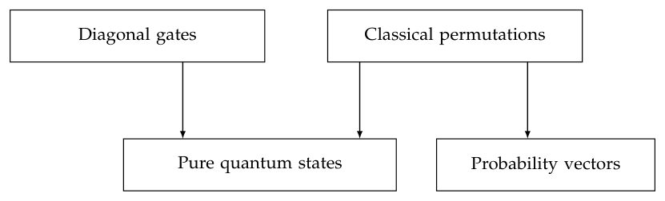
<figcaption class="paper-figure-caption"><b>Fig 1.</b> Figure 1: Ingredients used in the preparation constructions of Propositions 3.8 and 4.2. The arrows indicate parts of these constructions. Probability preparation also uses single-bit stochastic gates, and quantum preparation also uses single-qubit rotations. The final conversion from indicators to binary labels uses the reversible circuit of Lemma 2.16.</figcaption>
</figure>
<figure class="paper-figure-card">
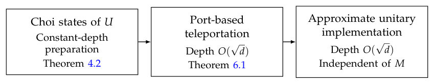
<figcaption class="paper-figure-caption"><b>Fig 2.</b> Figure 2: Exact reductions and approximation via port-based teleportation. (a) Each arrow gives a sufficient condition for exact constant-depth implementation of arbitrary unitaries. The traceless-involution arrow uses the direct unitary reduction following Proposition 5.12, with one additional clean qubit. (b) Preparing copies of the Choi state of U and applying port-based teleportation gives an approximate implementation of U. The quality of approximation is measured by the entanglement fidelity relative to U, and the depth includes resource preparation and output selection. The number of ancillary qubits are unrestricted in both panels.</figcaption>
</figure>
<figure class="paper-figure-card">
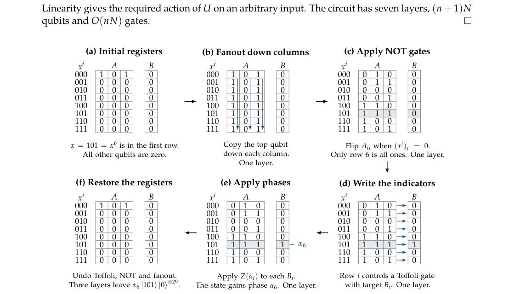
<figcaption class="paper-figure-caption"><b>Fig 3.</b> Figure 3: The diagonal construction for n = 3 and x = 101 = x6. Each cell gives the value of one qubit. The strings xi label the rows and are not additional registers. Follow the panels clockwise from (a) to (f). Column fanout copies the input, and NOT gates make row 6 the unique row consisting entirely of ones. The row Toffoli gates compute the indicator for this row, and the phase gates apply α6. Panels (b)–(e) each add one circuit layer. Panel (f) reverses the first three layers, giving seven layers in total. The grid describes the registers, rather than their physical arrangement. The action on arbitrary inputs follows by linearity.</figcaption>
</figure>
<figure class="paper-figure-card">
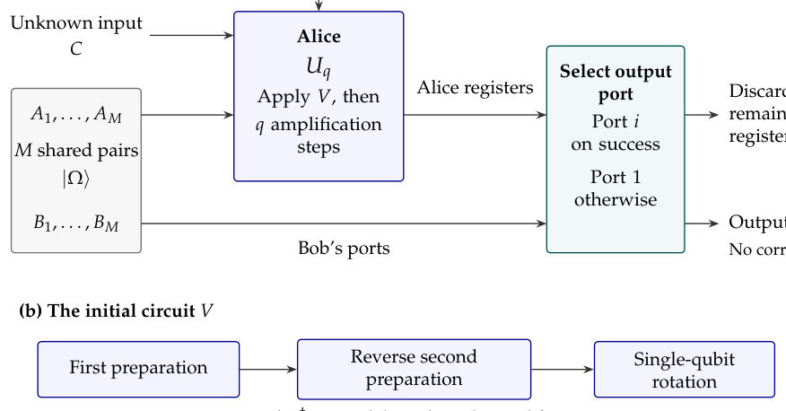
<figcaption class="paper-figure-caption"><b>Fig 4.</b> Figure 4: Unitary circuit for port-based teleportation. (a) Alice and Bob share M maximally entan- gled pairs. Alice applies Uq to the input register C, her registers A1, . . . , AM and ancillary qubits. A permutation of computational basis states places the selected port in a fixed output register. The circuit selects port i when the success condition holds and port 1 oth- erwise. Tracing out all other registers gives the channel E. The arrows represent quantum registers. The circuit uses no intermediate measurements and applies no correction to the selected port. (b) We construct V by applying the first conditional state preparation, the inverse of the second, and a single-qubit rotation...</figcaption>
</figure>
</div>
<p><strong>Summary.</strong> This paper explores the depth limitations of implementing arbitrary quantum unitaries using restricted gate sets. It shows that while some related tasks can be achieved in constant depth with unlimited resources, the general unitary case remains open. The authors propose a scalable, depth-bounded approximation method using port-based teleportation.</p>
<p><strong>Why it may be interesting.</strong> The work directly addresses fundamental limits on quantum computation complexity, which is crucial for designing efficient quantum algorithms and understanding the resource overheads of universal quantum computation.</p>
<details>
<summary>Detailed structure</summary>
<p><strong>Main problem.</strong> The paper investigates whether arbitrary unitary transformations can be implemented exactly in constant depth using quantum circuits built from single-qubit gates and generalized Toffoli gates, even when circuit size and ancillary qubits are unrestricted.</p>
<p><strong>Main result.</strong> While constant-depth constructions exist for state preparation and basis permutations, implementing arbitrary unitaries remains open; however, a port-based teleportation scheme achieves an approximation with depth $O(\sqrt{d})$.</p>
<p><strong>Method.</strong> The authors use reductions to simplify the problem (e.g., to traceless unitary involutions) and develop a port-based teleportation protocol to approximate the required unitaries.</p>
<p><strong>Model / system.</strong> The model is quantum circuits operating on qubits, utilizing single-qubit gates and generalized Toffoli gates, with analysis focusing on circuit depth and resource scaling.</p>
<p><strong>Key observables.</strong> Depth (constant depth is the goal), Entanglement Fidelity ($F_e$), and Circuit Size.</p>
<p><strong>Important parameters / regimes.</strong> Input dimension ($d$), number of ports ($M$), and the level ($\ell$) in the Clifford hierarchy.</p>
<p><strong>Assumptions / limitations.</strong> The primary assumption for some results is the availability of unbounded circuit size and ancillary qubits to achieve constant depth for specific subtasks.</p>
<p><strong>Figures summary.</strong> Figures summarize the ingredients for state preparation constructions and compare exact unitary reductions against the approximation provided by port-based teleportation.</p>
<p><strong>Paper structure.</strong> The paper progresses by establishing constant-depth constructions for simpler tasks (permutations, state preparation), then reducing the general unitary problem to known subproblems, and finally presenting the port-based teleportation scheme for approximation.</p>
</details>
<details>
<summary>Abstract</summary>
<p>Classical circuits with unbounded fan-in can compute any Boolean function in constant depth when their size is unrestricted. We ask whether removing the restrictions on circuit size and ancillary qubits also allows quantum circuits built from arbitrary single-qubit gates and generalised Toffoli gates to implement every unitary in constant depth.   We give exact constant-depth constructions for arbitrary permutations of computational basis states, diagonal unitaries and the preparation of arbitrary pure states. These connect quantum state preparation to reversible classical computation and the preparation of probability distributions. With fanout in the gate set, they use exponentially many gates and ancillary qubits and return all ancillary qubits to zero. Replacing fanout by an exact circuit over the original gate set preserves constant depth, although the size bounds can become doubly exponential.   The implementation of arbitrary unitaries in constant depth remains open. We give equivalent formulations in terms of copying the vectors of a specified orthonormal basis, extracting their labels and implementing restricted families of unitaries. We also reduce arbitrary unitary implementation to that of traceless unitary involutions using one additional clean qubit. With adaptive measurements, gate teleportation gives depth proportional to the level of a gate in the Clifford hierarchy.   Towards arbitrary unitary implementation in constant depth, we use port-based teleportation: for input dimension $d$ and $M\geq d^2-1$ ports, we construct a unitary circuit of depth $O(\sqrt d)$, independent of $M$ and including resource preparation and port selection, with entanglement fidelity at least $(1-(d^2-1)/(2M))^2$. Thus, at fixed $d$, the approximation can be made arbitrarily accurate without increasing depth. Whether the dependence on $d$ can also be removed remains open.</p>
</details>
<p><sub><a href="#top">↑ back to top</a></sub></p>

<p><a id="paper-2609.39974"></a></p>
<h3 id="the-quantum-query-complexity-of-the-semigroup-product-problem"><a href="http://arxiv.org/abs/2609.39974v1">The quantum query complexity of the semigroup product problem</a></h3>
<p><strong>Authors:</strong> Troy Lee, Miklos Santha<br>
<strong>Type:</strong> theory · <strong>Category:</strong> quantum information and computing · <strong>PDF:</strong> <a href="https://arxiv.org/pdf/2609.39974v1">https://arxiv.org/pdf/2609.39974v1</a><br>
<strong>Analysis basis:</strong> full PDF text, analyzed in chunks</p>
<div class="figure-strip-hint">↔ Scroll figures horizontally</div>
<div class="paper-figures-scroll">
<figure class="paper-figure-card">
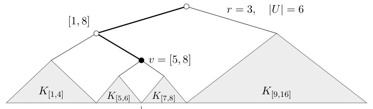
<figcaption class="paper-figure-caption"><b>Fig 1.</b> Figure 1: Doubling the covered subword length from 3 to 6. The filled dots mark U = U1 ∪U2. The middle positions max U1 = 5 and min U2 = 7 have lowest common ancestor v = [5, 8]. The shaded frontier intervals contain 2, 1, 1, 2 target positions, respectively, so their 3-summaries combine to dominate p(U). Reading the two child summaries at each vertex on the bold path supplies the entire frontier; records on other paths reuse the data at common ancestors.</figcaption>
</figure>
</div>
<p><strong>Summary.</strong> This work determines the quantum query complexity for computing the product of elements in a semigroup. It introduces and utilizes the concept of 'product breadth' ($eta$) to characterize the complexity, providing tight bounds for various classes of semigroups, including a significant improvement over previous general bounds.</p>
<p><strong>Why it may be interesting.</strong> While the subject is abstract algebra, the techniques used—query complexity analysis and deriving tight bounds based on structural invariants ($eta$)—are foundational tools in quantum computation theory, relevant for understanding resource limitations in quantum algorithms.</p>
<details>
<summary>Detailed structure</summary>
<p><strong>Main problem.</strong> The paper studies the quantum query complexity required to compute the product of $n$ elements in a semigroup, given access to the multiplication table.</p>
<p><strong>Main result.</strong> For finite commutative aperiodic monoids, the quantum query complexity is characterized by the product breadth $eta$, achieving $\Theta(\min\{n, \sqrt{n}eta\})$.</p>
<p><strong>Method.</strong> The analysis employs quantum query complexity theory, relating the problem to algebraic structure via the concept of product breadth ($eta$) and leveraging structural properties of semigroups.</p>
<p><strong>Model / system.</strong> The model is a finite aperiodic semigroup or monoid $S=(S, \otimes)$, where the computation involves finding $x_1 \otimes \cdots \otimes x_n$. The complexity depends heavily on the algebraic structure of $S$.</p>
<p><strong>Key observables.</strong> Quantum query complexity, Product breadth ($eta$), Aperiodicity index ($\iota(M)$).</p>
<p><strong>Important parameters / regimes.</strong> $n$ (number of inputs), $N$ (size of the semigroup), $eta$ (product breadth).</p>
<p><strong>Assumptions / limitations.</strong> The analysis focuses on the bounded-error quantum query complexity for aperiodic semigroups/monoids.</p>
<p><strong>Paper structure.</strong> The paper develops bounds by analyzing specific cases (commutative monoids, monoids with stable partial orders) and culminates in an improved upper bound for arbitrary finite aperiodic semigroups, comparing it against known lower bounds.</p>
</details>
<details>
<summary>Abstract</summary>
<p>We study the quantum query complexity of computing a semigroup product $x_1\cdots x_n$, when one query reveals one input element and the multiplication table is given. For a finite aperiodic semigroup of size $N-1$, the argument of Aaronson, Grier, and Schaeffer gives an upper bound of $\sqrt n\,(N\log(nN+2))^{O(N)}$ queries.   To obtain query bounds that reflect algebraic structure, we study the product breadth $β$: the smallest bound such that every input word has a subsequence of at most $β$ letters with the same product.   For nontrivial finite commutative aperiodic monoids, the bounded-error quantum query complexity is $Θ(\min\{n,\sqrt{nβ}\})$, and is thus characterized by product breadth. We further show that if such a monoid $M$ has aperiodicity index $k$ (the least positive integer satisfying $x^k=x^{k+1}$ for every $x\in M$), then $β=O(k\log(|M|+1)\log\log(|M|+2))$.   For monoids with a stable partial order in which the identity is the minimum element, we prove that the bounded-error quantum query complexity is at most $\sqrt{n+1}((β+2)\log(n+2))^{O(\log(β+2))}$.   For arbitrary finite aperiodic semigroups of order $N-1$, we improve the bound of Aaronson, Grier, and Schaeffer, obtaining a bounded-error quantum query complexity of at most \[ \min\left\{n,\sqrt n\, \log^{O((N\log(N+2))^{1/3})}(n+2)\right\}. \] The dependence on semigroup size is nearly tight: the bounded-depth Dyck lower bound of Ambainis et al. yields aperiodic monoids requiring $\sqrt n\,2^{Ω(N^{1/3})}$ quantum queries in the relevant parameter range.</p>
</details>
<p><sub><a href="#top">↑ back to top</a></sub></p>

<p><a id="paper-2609.40186"></a></p>
<h3 id="the-structure-of-higher-order-quantum-resources-with-an-application-to-coherence"><a href="http://arxiv.org/abs/2609.40186v1">The Structure of Higher-Order Quantum Resources with an Application to Coherence</a></h3>
<p><strong>Authors:</strong> Felix Ahnefeld, Thomas Theurer, Martin B. Plenio<br>
<strong>Type:</strong> theory · <strong>Category:</strong> quantum information and computing · <strong>PDF:</strong> <a href="https://arxiv.org/pdf/2609.40186v1">https://arxiv.org/pdf/2609.40186v1</a><br>
<strong>Analysis basis:</strong> full PDF text, analyzed in chunks</p>
<div class="figure-strip-hint">↔ Scroll figures horizontally</div>
<div class="paper-figures-scroll">
<figure class="paper-figure-card">
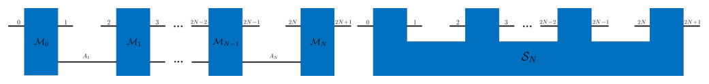
<figcaption class="paper-figure-caption"><b>Fig 1.</b> Figure 1: A quantum network comprised of channels M0, . . . , MN as depicted on the left side is a specific implementation of a supermap SN shown on the right.</figcaption>
</figure>
<figure class="paper-figure-card">
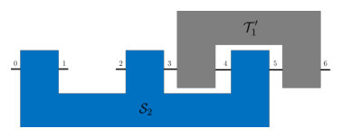
<figcaption class="paper-figure-caption"><b>Fig 2.</b> Figure 2: Composing quantum supermaps. A quantum supermap S2 is composed with T1, ˜T1, and T ′ 1 by connecting all input and output systems that appear in both supermaps. It is always assumed that this is consistent; see the main text for details.</figcaption>
</figure>
<figure class="paper-figure-card">
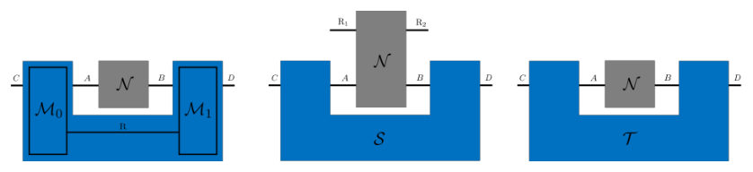
<figcaption class="paper-figure-caption"><b>Fig 3.</b> Figure 3: A free network is composed of free pre-and postprocessing channels M0, M1 ∈O as shown on the left. A completely free superchannel S(A→B)→(C→D) transforms any free channel N to a free channel in a complete sense, i.e., the resulting channel S ∗N shown in the middle must be free for arbitrary systems R1, R2 and all free channels N. A maximally free superchannel T (A→B)→(C→D) transforms any free channel N A→B to another free channel T ∗N as shown on the right.</figcaption>
</figure>
<figure class="paper-figure-card">
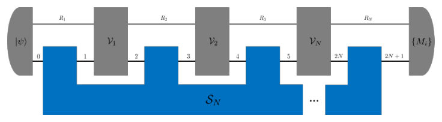
<figcaption class="paper-figure-caption"><b>Fig 4.</b> Figure 4: Discrimination strategy between quantum supermaps consisting of a sequence of state preparation, isometries, and a final measurement. Without loss of generality, the initial state can be purified, and all inserted channels can be dilated to isometries.</figcaption>
</figure>
<figure class="paper-figure-card">
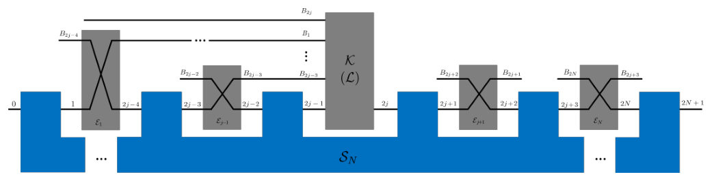
<figcaption class="paper-figure-caption"><b>Fig 5.</b> Figure 5: Depiction of the free network (in gray) that is inserted into a supermap SN in order to derive necessary conditions for SN being an element of a set of supermaps that is compatible with DI.</figcaption>
</figure>
</div>
<p><strong>Summary.</strong> This paper introduces a comprehensive resource theory framework for supermaps, unifying the study of quantum resources across states, channels, and processes. It develops mathematical tools like the 'quantum comb' and analyzes supermap distillation/dilution protocols. The findings advance the understanding of resource quantification in complex, multi-copy quantum information tasks.</p>
<p><strong>Why it may be interesting.</strong> This work provides advanced mathematical tools for quantifying non-classical correlations in multi-copy quantum processes, which is fundamental for understanding resource limitations in quantum computation and communication protocols.</p>
<details>
<summary>Detailed structure</summary>
<p><strong>Main problem.</strong> The paper develops a unified, general framework for quantifying higher-order quantum resources, extending resource theories from states and channels to supermaps (processes).</p>
<p><strong>Main result.</strong> It characterizes the largest sets of compatible supermaps for dynamical coherence and establishes relationships between various supermap distance measures, showing that the set of compatible supermaps is strictly larger than the free network set.</p>
<p><strong>Method.</strong> The authors generalize resource theory concepts, utilizing the Choi-Jamiołkowski representation and defining supermap resource monotones, distillation, and dilution protocols.</p>
<p><strong>Model / system.</strong> The focus is on quantum states, quantum channels ($\mathcal{E}$), and quantum supermaps ($\mathcal{S}$), which are necessary for describing multi-copy quantum processes. The analysis is generalized to include concepts like free supermaps and compatible supermaps.</p>
<p><strong>Key observables.</strong> Supermap resource monotones, supermap distillation/dilution rates, generalized diamond distance ($ ext{d}<em ext_SN="ext{SN">{\diamond,   ext{N}}$), and the quantum comb ($ ext{J}</em>$).}</p>
<p><strong>Important parameters / regimes.</strong> The analysis considers the parallel and adaptive settings for distillation and dilution tasks.</p>
<p><strong>Assumptions / limitations.</strong> The work assumes a definite causal order for the supermap processes and is restricted to finite-dimensional quantum systems.</p>
<p><strong>Figures summary.</strong> Figure 1 illustrates a quantum network implementing a supermap. Figure 2 shows the composition of quantum supermaps using a link product.</p>
<p><strong>Paper structure.</strong> The paper progresses by first establishing the general framework for supermaps, then deriving mathematical tools like the comb representation and distance measures, and finally applying this framework to specific resource theories, such as dynamical coherence.</p>
</details>
<details>
<summary>Abstract</summary>
<p>We develop a general framework for higher-order quantum resources that treats the resourcefulness of quantum states, channels, and supermaps (also called processes) in a unified manner. By generalizing well-established concepts from resource theories of states and channels, we introduce and study supermap resource monotones and supermap distillation and dilution. As free supermaps, we consider free networks (supermaps that can be implemented with free channels), compatible supermaps (sets of supermaps closed under arbitrary composition), and maximally free superchannels. Specializing to approximate channel-to-channel conversions, we show that under mild assumptions, the conversion error with respect to the diamond distance and the worst-case infidelity coincide. We then apply the general framework to resource theories of dynamical coherence, where we establish the existence of largest sets of compatible supermaps. By characterizing these sets with semidefinite constraints, we show that they are strictly larger than the corresponding free networks but do not contain all maximally free superchannels. We finish by investigating the operational differences of these sets in one-shot channel distillation and dilution, providing solutions for both tasks in the parallel setting and for dilution in the adaptive setting.</p>
</details>
<p><sub><a href="#top">↑ back to top</a></sub></p>

<p><a id="paper-2609.40054"></a></p>
<h3 id="transmitting-algebras-through-quantum-channels"><a href="http://arxiv.org/abs/2609.40054v1">Transmitting algebras through quantum channels</a></h3>
<p><strong>Authors:</strong> Robert Salzmann, Satvik Singh<br>
<strong>Type:</strong> theory · <strong>Category:</strong> quantum information and computing · <strong>PDF:</strong> <a href="https://arxiv.org/pdf/2609.40054v1">https://arxiv.org/pdf/2609.40054v1</a><br>
<strong>Analysis basis:</strong> full PDF text, analyzed in chunks</p>
<div class="figure-strip-hint">↔ Scroll figures horizontally</div>
<div class="paper-figures-scroll">
<figure class="paper-figure-card">
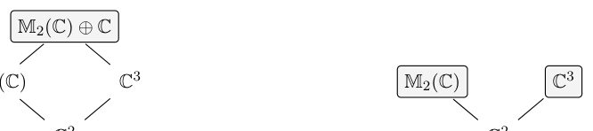
<figcaption class="paper-figure-caption"><b>Fig 1.</b> Figure 1: Hasse diagrams of two possible transmission sets, with nonzero algebras identified up to ∗- isomorphism. An upward path from A to B means A ≤B; edges show only cover relations. Boxes mark maximal elements. In (a), the boxed algebra dominates every transmittable algebra. In (b), the two boxed algebras have no common upper bound in the transmission set.</figcaption>
</figure>
<figure class="paper-figure-card">
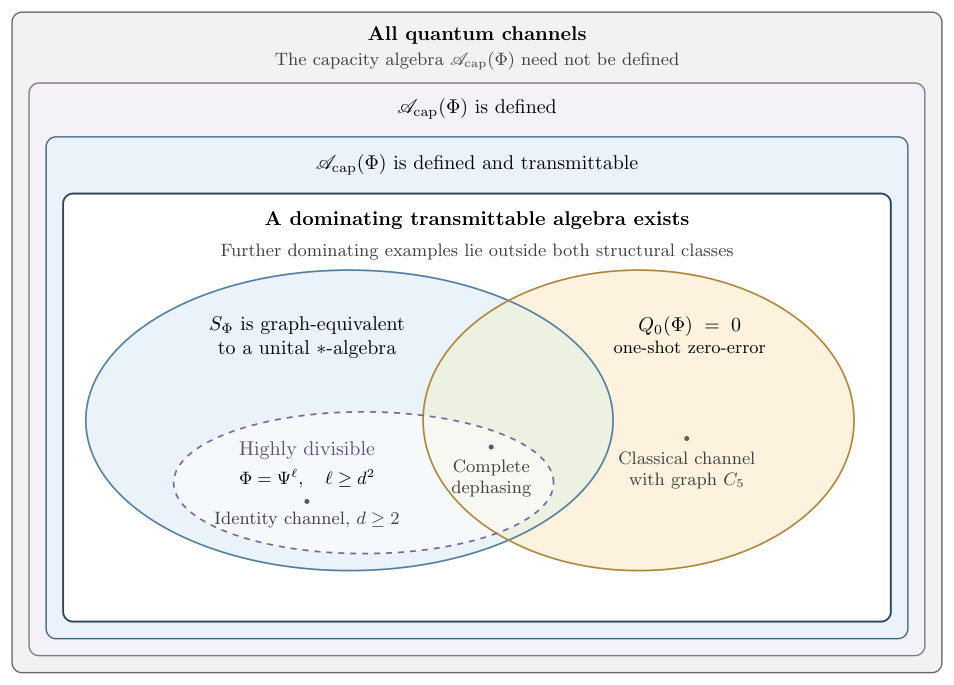
<figcaption class="paper-figure-caption"><b>Fig 2.</b> Figure 2: Classes of channels admitting a capacity algebra and a dominating transmittable algebra. The two structural sufficient classes from Section 4.2 and 4.3 overlap, and neither contains the other; their union is strictly smaller than the class admitting a dominating algebra. The bottom line records further sufficient classes without depicting their intersections with the algebraic class.</figcaption>
</figure>
</div>
<p><strong>Summary.</strong> This work develops a rigorous theory for determining which complex information structures (C*-algebras) can be perfectly transmitted through a quantum channel. The central finding is that a single 'optimal' structure may not exist, forcing users to select different optimal strategies based on the specific task. This advances the understanding of quantum channel capacity by introducing algebraic invariants and characterizing when such universal structures fail to exist.</p>
<p><strong>Why it may be interesting.</strong> It provides a deep algebraic framework for understanding information capacity limits, which is fundamental to quantum communication theory and quantum error correction.</p>
<details>
<summary>Detailed structure</summary>
<p><strong>Main problem.</strong> The paper develops a theory to characterize the exact transmission of finite-dimensional C*-algebras through arbitrary quantum channels.</p>
<p><strong>Main result.</strong> The existence of a unique 'dominating' algebra that encompasses all optimal transmission strategies is not guaranteed, and the failure of domination implies complex, task-dependent choices for the user.</p>
<p><strong>Method.</strong> The authors use algebraic methods involving embedding preorders on the set of transmittable algebras and introduce 'hybrid capacities' to characterize the structure.</p>
<p><strong>Model / system.</strong> The system involves quantum channels $\Phi: L(H) 	o L(K)$ acting on finite-dimensional C*-algebras, which model hybrid classical-quantum information.</p>
<p><strong>Key observables.</strong> Transmittable algebras $T(\Phi)$, hybrid capacities, and the growth rate of maximal algebra types under tensor products.</p>
<p><strong>Important parameters / regimes.</strong> The dimension of the algebras ($d_k$), the block-length of the code, and the structure of the quantum channel $\Phi$.</p>
<p><strong>Assumptions / limitations.</strong> The analysis relies on the algebraic structure of the channel and the definition of transmittability via encoding/decoding channels.</p>
<p><strong>Figures summary.</strong> Figures illustrate the Hasse diagrams showing when a dominating algebra exists for specific channels, and classification diagrams relating channel structures to the existence of capacity algebras.</p>
<p><strong>Paper structure.</strong> The paper establishes the mathematical framework for transmittable algebras, investigates the existence and properties of a dominating algebra, derives structural theorems for domination, and concludes with examples showing the failure of domination and superadditivity analogues.</p>
</details>
<details>
<summary>Abstract</summary>
<p>We develop a theory of exact transmission of finite-dimensional $C^*$-algebras through quantum channels. These algebras describe hybrid classical-quantum information, allowing the dimension of the quantum system to depend on the classical message. Allowing arbitrary encodings and decodings yields a transmission set of algebra types, ordered by embedding, that unifies zero-error information theory with operator-algebraic error correction. We ask if this set admits a dominating algebra into which every transmittable algebra embeds. Our central finding is that domination can fail even in small dimensions. In its absence, several incomparable maximal algebras can describe different optimal uses of the same channel, forcing the user to select one depending on the operational task and the type of information to be preserved. We introduce hybrid capacities that reconstruct the only possible dominating algebra type and present a complete finite characterization of domination using minimal forbidden algebra types. We identify dominating algebras for channels whose operator systems are graph-isomorphic to $*$-algebras, including highly divisible channels, and for channels with zero one-shot zero-error quantum capacity. Under tensor products, we prove that joint coding can produce new algebra types, giving an algebraic analogue of superadditivity from Shannon theory. Domination can fail for the joint use of two channels, even when both channels separately admit dominating algebras. Finally, we construct a channel whose $n$-fold tensor powers have doubly exponentially many maximal algebra types, attaining the largest possible growth scaling for finite-dimensional channels. Consequently, new transmittable algebra types appear at arbitrarily large block-lengths for this channel, so its full transmission structure cannot be generated from any finite collection of bounded-block-length codes.</p>
</details>
<p><sub><a href="#top">↑ back to top</a></sub></p>

<p><a id="paper-2609.40050"></a></p>
<h3 id="unconditional-quantum-advantage-with-noisy-planar-architectures"><a href="http://arxiv.org/abs/2609.40050v1">Unconditional quantum advantage with noisy planar architectures</a></h3>
<p><strong>Authors:</strong> Libor Caha, Robert Koenig, Louis Paletta<br>
<strong>Type:</strong> theory · <strong>Category:</strong> quantum information and computing · <strong>PDF:</strong> <a href="https://arxiv.org/pdf/2609.40050v1">https://arxiv.org/pdf/2609.40050v1</a><br>
<strong>Analysis basis:</strong> full PDF text, analyzed in chunks</p>
<div class="figure-strip-hint">↔ Scroll figures horizontally</div>
<div class="paper-figures-scroll">
<figure class="paper-figure-card">
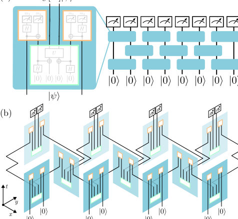
<figcaption class="paper-figure-caption"><b>Fig 1.</b> FIG. 1: Parallelization of a 1D-local circuit CFT 1D,∗: (a) a 2- qubit gate U is recompiled by a gate-teleportation gadget that implements the gate up to a Pauli correction PU[m], deter- mined by the measurement outcome m, (b) because the input to the Bell measurements (shown in orange) is causally after the output of the recompiled unitary, the initial 1D-local cir- cuit can be unfolded in the (x, y) plane by replacing qubit reinitializations with new qubits in space, and connecting the output of one gate-teleportation gadget to the input of an- other. The resulting 2D-local circuit CFT 2D has constant depth corresponding to the gate-teleportation gadget circuit, its ini- tial state...</figcaption>
</figure>
<figure class="paper-figure-card">
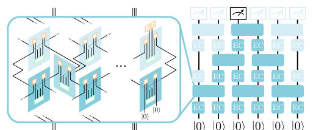
<figcaption class="paper-figure-caption"><b>Fig 2.</b> FIG. 2: Locality of the postprocessing map. Each output block logical measurement is obtained in a way that only de- pends on its backward lightcone (shown in dark cyan) — that is, on the corresponding region of the underlying 1D-local circuit C1D. A fault-tolerant gadget within that region con- tributes two types of outcomes (shown in orange): the out- comes of the physical teleportation-based gadgets, and the outcomes of the stabilizer measurements. Each gate in fault- tolerant gadget can also depend on constantly many input bits. The locality of the postprocessing map can thus be bounded by the size of the logical backward lightcone multi- plied by the maximal number of measurement...</figcaption>
</figure>
</div>
<p><strong>Summary.</strong> This paper proves an unconditional quantum advantage for planar quantum devices by showing that shallow, 2D-local quantum circuits can solve problems intractable for classical AC0 circuits, even when the circuits are imperfectly implemented with local noise. The authors achieve this by compiling a fault-tolerant 1D circuit into a 2D structure and demonstrating the resulting computational separation.</p>
<p><strong>Why it may be interesting.</strong> This work provides a concrete, physically relevant demonstration of quantum advantage that is robust to noise and does not rely on unproven complexity assumptions, making it highly relevant for near-term quantum hardware.</p>
<details>
<summary>Detailed structure</summary>
<p><strong>Main problem.</strong> To establish an unconditional quantum advantage by demonstrating that shallow, 2D-local quantum circuits are computationally more powerful than classical AC0 circuits, even when subject to realistic local stochastic noise.</p>
<p><strong>Main result.</strong> The authors prove a complexity separation showing that a specific relation problem can be solved with high probability by a noisy 2D quantum circuit, while any AC0 circuit solving it must have exponentially large size.</p>
<p><strong>Method.</strong> The proof involves constructing a classically hard relation $R_n$ and showing that the quantum circuit solves it with high probability under noise, while the classical simulation requires an exponentially large circuit size.</p>
<p><strong>Model / system.</strong> The model considers quantum devices restricted to local operations in 2D and subject to local stochastic Pauli noise below a constant threshold. The quantum computation is compiled from a 1D-local Clifford circuit into a non-adaptive, 2D-local, constant-depth circuit.</p>
<p><strong>Key observables.</strong> Success probability of the quantum circuit (high probability) versus the failure probability of the classical circuit (constant probability).</p>
<p><strong>Important parameters / regimes.</strong> The noise strength must remain below a constant fault-tolerance threshold ($p_{th}$); the depth $D$ is constant, and the locality is 2D.</p>
<p><strong>Assumptions / limitations.</strong> The advantage is unconditional, meaning it does not rely on unproven complexity assumptions, but it requires the noise to be below a specific fault-tolerance threshold.</p>
<p><strong>Figures summary.</strong> Figure 1 illustrates the process of compiling a 1D-local circuit into a 2D plane using gate teleportation, showing how the circuit unfolds in the (x, y) plane.</p>
<p><strong>Paper structure.</strong> The paper first establishes the physical model (2D, noisy, local). It then details the compilation process (1D $   o$ 2D, fault-tolerant) and the post-processing map. Finally, it uses this construction to prove the complexity separation by comparing the quantum solution to the known classical hardness of the problem.</p>
</details>
<details>
<summary>Abstract</summary>
<p>We consider quantum devices restricted to local operations in 2D and subject to local stochastic noise below a constant threshold. We show that such circuits are computationally more powerful than AC0-circuits, i.e., noise-free, geometrically-unconstrained constant-depth classical circuits with unbounded fan-in AND, OR and NOT gates. To this end, we exhibit a computational problem with the following properties: (i) Any instance of the problem is correctly solved with high probability by a certain geometrically 2D-local quantum circuit even if the latter is imperfectly implemented, but (ii) any polynomial-size AC0-circuit fails to solve certain instances of the problem with constant probability. To our knowledge, this isthe first complexity-theoretic separation which applies to planar quantum devices, incorporates noise-resilience and is unconditional, i.e., does not rely on complexity-theoretic assumptions. This brings the experimental demonstration of an unconditional quantum advantage closer to experimental realities.</p>
</details>
<p><sub><a href="#top">↑ back to top</a></sub></p>

<p><a id="paper-2609.40215"></a></p>
<h3 id="universal-distillation-of-quantum-entanglement"><a href="http://arxiv.org/abs/2609.40215v1">Universal distillation of quantum entanglement</a></h3>
<p><strong>Authors:</strong> Ryuji Takagi, Kaito Watanabe, Takaya Matsuura, Hayato Arai, Masahito Hayashi<br>
<strong>Type:</strong> theory · <strong>Category:</strong> quantum information and computing · <strong>PDF:</strong> <a href="https://arxiv.org/pdf/2609.40215v1">https://arxiv.org/pdf/2609.40215v1</a><br>
<strong>Analysis basis:</strong> full PDF text, analyzed in chunks</p>
<div class="figure-strip-hint">↔ Scroll figures horizontally</div>
<div class="paper-figures-scroll">
<figure class="paper-figure-card">
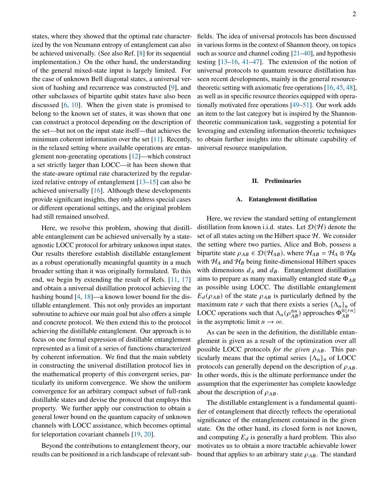
<figcaption class="paper-figure-caption"><b>Fig 1.</b> Low-resolution page preview, page 2</figcaption>
</figure>
<figure class="paper-figure-card">
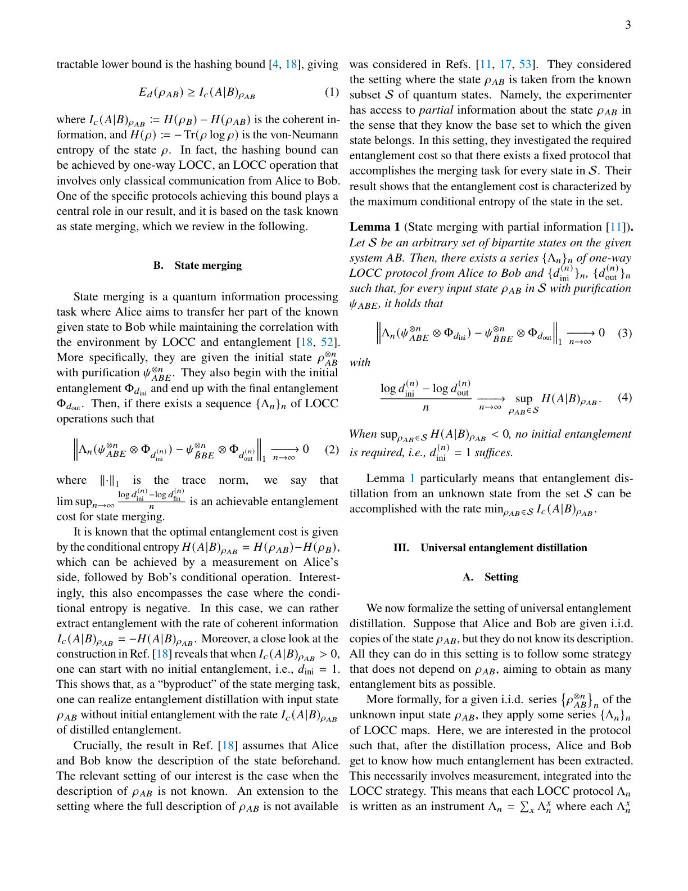
<figcaption class="paper-figure-caption"><b>Fig 2.</b> Low-resolution page preview, page 3</figcaption>
</figure>
<figure class="paper-figure-card">
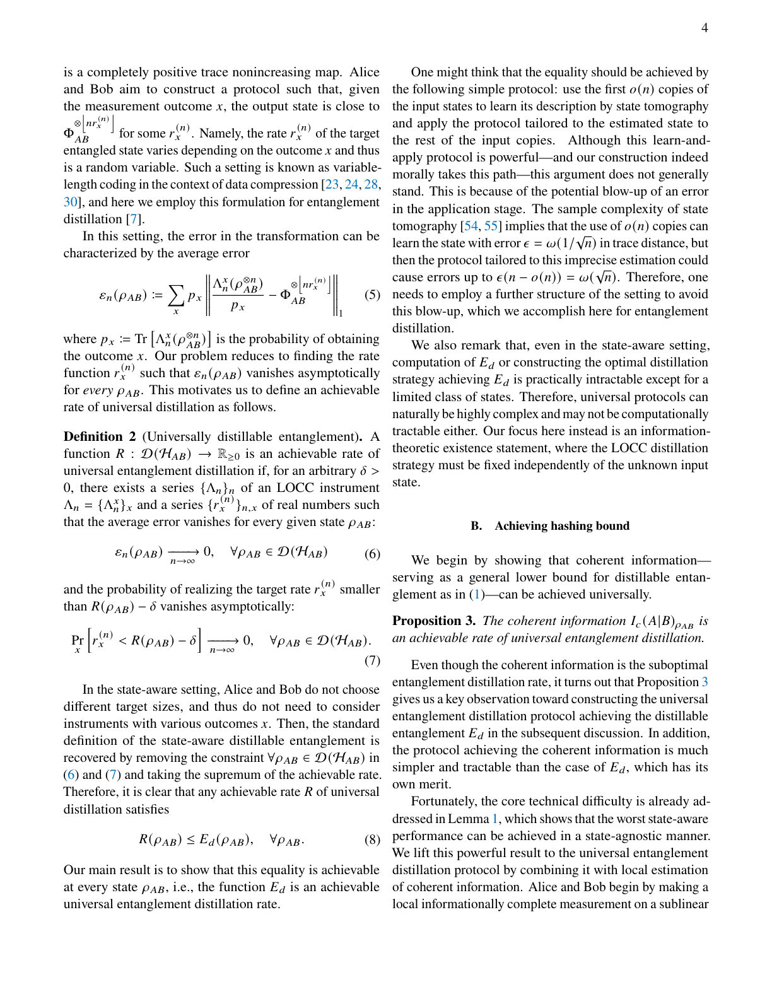
<figcaption class="paper-figure-caption"><b>Fig 3.</b> Low-resolution page preview, page 4</figcaption>
</figure>
<figure class="paper-figure-card">
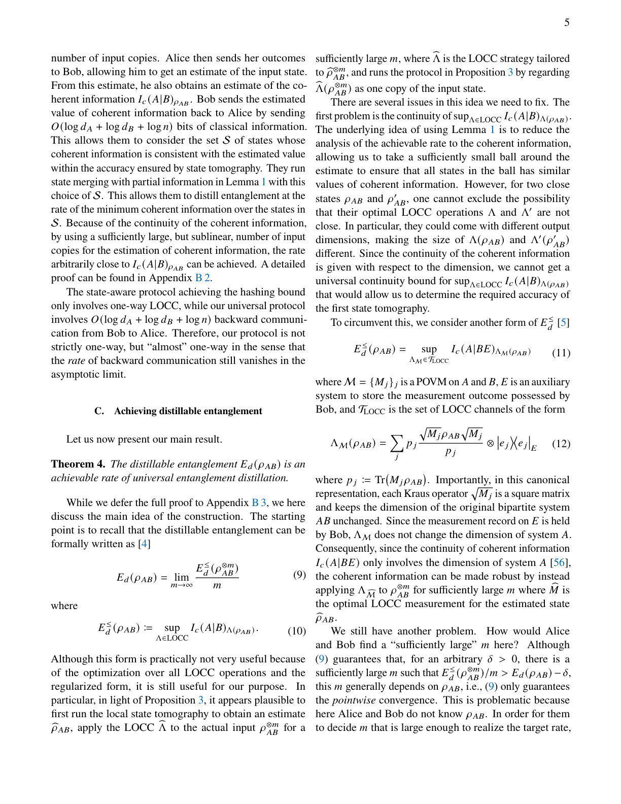
<figcaption class="paper-figure-caption"><b>Fig 4.</b> Low-resolution page preview, page 5</figcaption>
</figure>
<figure class="paper-figure-card">
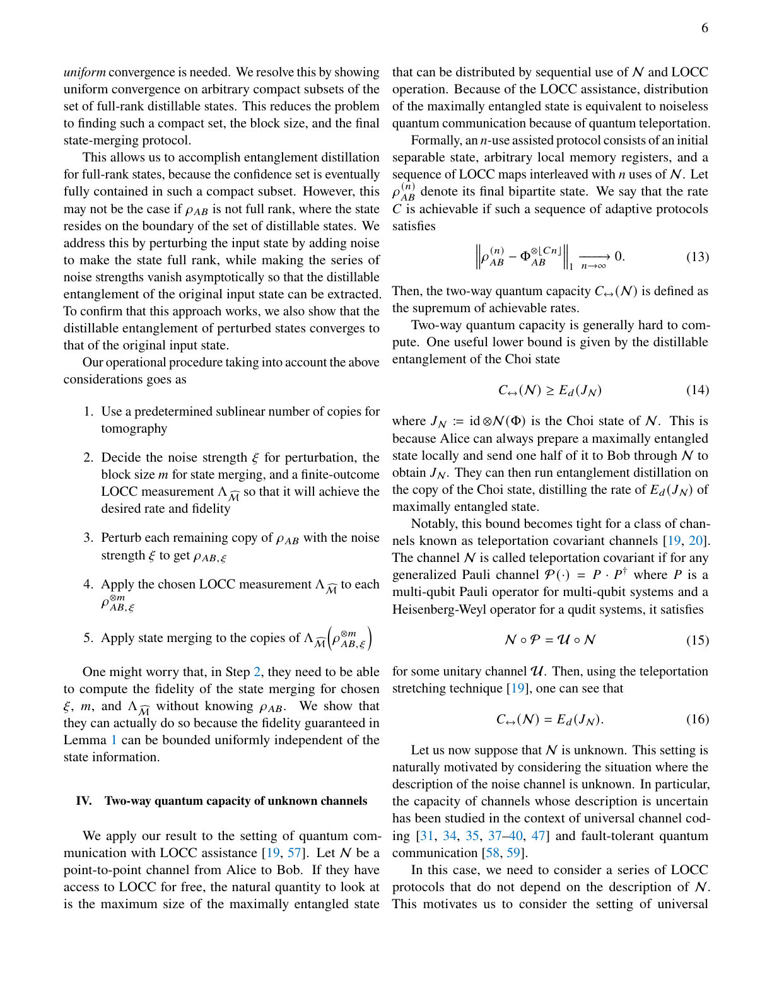
<figcaption class="paper-figure-caption"><b>Fig 5.</b> Low-resolution page preview, page 6</figcaption>
</figure>
</div>
<p><strong>Summary.</strong> This work addresses the limitation of entanglement distillation theory that previously required knowing the exact input state. The authors introduce a universal protocol that achieves the maximum distillable entanglement rate using only local operations and classical communication, making $E_d$ a robust measure for unknown quantum states.</p>
<p><strong>Why it may be interesting.</strong> It provides a robust, operational definition for entanglement distillation that holds even in realistic scenarios where the quantum state is unknown, which is crucial for quantum communication protocols.</p>
<details>
<summary>Detailed structure</summary>
<p><strong>Main problem.</strong> To establish distillable entanglement as a fundamental operational quantity even when the parties do not know the exact description of the input quantum state (state-agnostic distillation).</p>
<p><strong>Main result.</strong> The authors prove that a universal LOCC protocol exists that achieves the distillable entanglement rate for any unknown input state, confirming its operational significance.</p>
<p><strong>Method.</strong> The protocol is constructed using state merging techniques applied to multiple copies of the state, combined with the uniform convergence property of finite-block estimates.</p>
<p><strong>Model / system.</strong> The study concerns bipartite quantum states $\rho_{AB}$ acting on a tensor product Hilbert space, characterizing the rate of extracting Bell states.</p>
<p><strong>Key observables.</strong> Distillable Entanglement ($E_d$), Coherent Information ($I_c$), and the asymptotic rate of entanglement extraction.</p>
<p><strong>Important parameters / regimes.</strong> The number of copies ($n$), the estimation error ($\epsilon_n$), and the noise strength parameter ($\xi_k$).</p>
<p><strong>Assumptions / limitations.</strong> The analysis relies on the ability to perform local informationally complete measurements and the convergence of finite-block estimates to the true distillable entanglement.</p>
<p><strong>Paper structure.</strong> The paper first reviews the standard state-aware definition of $E_d$, then introduces the universal protocol based on state merging and local estimation, culminating in the proof that the rate converges to $E_d(
ho_{AB})$ regardless of prior state knowledge.</p>
</details>
<details>
<summary>Abstract</summary>
<p>Distillable entanglement---the maximum rate of Bell states extractable from the given noisy entangled states via local operations and classical communication (LOCC)---has been a central quantity to characterize the operational value of entangled states. However, this operational meaning had been known to be valid only under a crucial assumption: both parties know the description of the input state and can choose the protocol tailored to it, which does not necessarily reflect the natural operational setting. Here, we show that the distillable entanglement is the fundamental operational quantity even without this assumption. We present a universal LOCC protocol---whose description does not depend on the input state and thus works universally for any input---that achieves the distillable entanglement of an arbitrary unknown input state. Our result therefore lifts the distillable entanglement to a robust notion of an operationally meaningful quantity and clarifies that input-state knowledge is not necessary to achieve the optimal rate of entanglement distillation. Our protocol is based on state merging for compound states, together with the uniform convergence property of the finite-block quantity toward distillable entanglement.</p>
</details>
<p><sub><a href="#top">↑ back to top</a></sub></p>

<p><a id="paper-2609.40289"></a></p>
<h3 id="verifiable-quantum-advantage-and-computation-via-quantum-circuit-obfuscation"><a href="http://arxiv.org/abs/2609.40289v1">Verifiable Quantum Advantage and Computation via Quantum Circuit Obfuscation</a></h3>
<p><strong>Authors:</strong> Alexandru Gheorghiu, Aparna Gupte, Vojtěch Havlíček, Yunchao Liu<br>
<strong>Type:</strong> theory · <strong>Category:</strong> quantum information and computing · <strong>PDF:</strong> <a href="https://arxiv.org/pdf/2609.40289v1">https://arxiv.org/pdf/2609.40289v1</a><br>
<strong>Analysis basis:</strong> full PDF text, analyzed in chunks</p>
<div class="figure-strip-hint">↔ Scroll figures horizontally</div>
<div class="paper-figures-scroll">
<figure class="paper-figure-card">
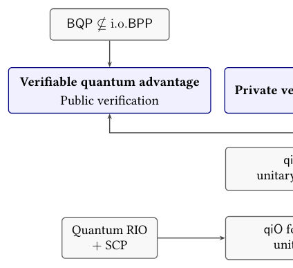
<figcaption class="paper-figure-caption"><b>Fig 1.</b> Figure 1: Technical structure of the constructions. Solid arrows indicate implications.</figcaption>
</figure>
<figure class="paper-figure-card">
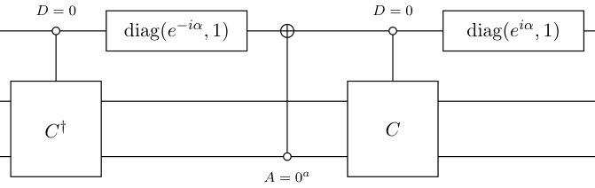
<figcaption class="paper-figure-caption"><b>Fig 2.</b> Figure 7: Ancilla-free compilation of a tidy circuit C. Sample k once during obfuscation, uniformly from {0, . . . , 2λ −1}, and set α = 2πk/2λ. Gates act from left to right. An open control on A tests whether the entire register is 0a; an open control on D tests whether D = 0. The boxes C and C† denote the full gate sequence on Q, A and its inverse, with no initialization or discarding inside either box. The diagonal gates diag(e−iα, 1) and diag(eiα, 1) act on D, multiplying its |0⟩component by the indicated phase and leaving its |1⟩component unchanged. All n + a + 1 qubits are logical inputs. After synthesis to negligible error and padding to a common shape, the classical description of...</figcaption>
</figure>
</div>
<p><strong>Summary.</strong> This work establishes rigorous cryptographic protocols for proving and verifying quantum computational advantage. By leveraging Quantum Indistinguishability Obfuscation (qiO), the authors construct schemes that allow classical parties to verify the results of BQP computations, achieving both private and publicly verifiable standards. This provides a strong theoretical foundation for the concept of quantum advantage.</p>
<p><strong>Why it may be interesting.</strong> While highly theoretical, the rigorous cryptographic framework developed for verifying quantum computation provides deep insights into the computational separation between classical and quantum resources, which underpins much of modern quantum information theory.</p>
<details>
<summary>Detailed structure</summary>
<p><strong>Main problem.</strong> The paper addresses the challenge of creating protocols that allow classical verification of quantum computational advantages and the results of BQP computations.</p>
<p><strong>Main result.</strong> They construct a publicly verifiable two-message quantum-advantage protocol and develop protocols for both private and public classical verification of arbitrary BQP computations.</p>
<p><strong>Method.</strong> The core method relies on utilizing Quantum Indistinguishability Obfuscation (qiO) to build cryptographic foundations for quantum advantage proofs and verification schemes.</p>
<p><strong>Model / system.</strong> The model involves abstract quantum circuits and the complexity class BQP (Bounded-error Quantum Polynomial time). The security is analyzed using quantum indistinguishability and the diamond distance.</p>
<p><strong>Key observables.</strong> Quantum indistinguishability ($    ext{qiO}$), quantum advantage proof success probability, and the ability to distinguish between quantum and classical computation.</p>
<p><strong>Important parameters / regimes.</strong> The security parameter $\lambda$, the negligible error bounds ($\epsilon, \delta, \kappa$), and the computational assumption $ ext{BQP} 
eq  ext{BPP}$.</p>
<p><strong>Assumptions / limitations.</strong> The existence of quantum indistinguishability obfuscation ($ ext{qiO}$), a slightly stronger version of $    ext{BQP} 
eq  ext{BPP}$, and post-quantum one-way functions for the public verification protocol.</p>
<p><strong>Figures summary.</strong> Figure 1 illustrates the technical structure of the constructions, showing implications between various protocols, such as public verification leading to bounds on quantum advantage.</p>
<p><strong>Paper structure.</strong> The paper builds from the general problem of verifiable quantum advantage, first constructing a two-message protocol, then detailing private verification using only $ ext{qiO}$, and finally achieving the first publicly verifiable protocol by adding post-quantum assumptions.</p>
</details>
<details>
<summary>Abstract</summary>
<p>We construct protocols for classically verifiable quantum advantage and classical verification of $\mathsf{BQP}$ computations using \emph{quantum indistinguishability obfuscation} (qiO). Specifically, given qiO and assuming a slightly stronger version of $\mathsf{BQP}\neq\mathsf{BPP}$, we construct a two-message quantum-advantage protocol that is efficiently and publicly verifiable. Our result can be viewed as a rigorous cryptographic foundation for the heuristic quantum advantage proposals based on \emph{peaked random circuit sampling} of Aaronson and Zhang (arXiv:2404.14493).   We also construct two simple protocols for classically verifying arbitrary $\mathsf{BQP}$ computations. The first protocol is privately verifiable and assumes only the existence of qiO. This gives a rare example of a nontrivial cryptographic application of (quantum) iO that does not make additional computational hardness assumptions. The second protocol additionally assumes post-quantum one-way functions and is \emph{publicly verifiable}. To our knowledge, this is the first publicly verifiable protocol for classical verification of $\mathsf{BQP}$ computations under computational assumptions in the standard model.   We show that all our results hold when qiO is assumed only for ancilla-free unitary circuits. As evidence supporting this assumption, we prove a worst-to-average-case reduction for obfuscating such circuits. This reduction extends the local-mixing framework of Canetti, Chamon, Mucciolo and Ruckenstein (TCC 2024) under quantum analogues of their assumptions.</p>
</details>
<p><sub><a href="#top">↑ back to top</a></sub></p>

<p><a id="paper-2609.39918"></a></p>
<h3 id="verifiable-quantum-advantage-based-on-polynomials-with-planted-structures"><a href="http://arxiv.org/abs/2609.39918v1">Verifiable quantum advantage based on polynomials with planted structures</a></h3>
<p><strong>Authors:</strong> Markus Bläser, Michael Gullans, Dominik Hangleiter, Yuxuan Liu, Youming Qiao<br>
<strong>Type:</strong> theory · <strong>Category:</strong> quantum information and computing · <strong>PDF:</strong> <a href="https://arxiv.org/pdf/2609.39918v1">https://arxiv.org/pdf/2609.39918v1</a><br>
<strong>Analysis basis:</strong> full PDF text, analyzed in chunks</p>
<div class="figure-strip-hint">↔ Scroll figures horizontally</div>
<div class="paper-figures-scroll">
<figure class="paper-figure-card">
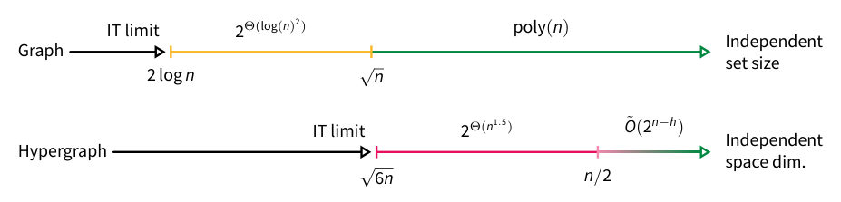
<figcaption class="paper-figure-caption"><b>Fig 1.</b> Figure 1: Distinguishing regimes for independent sets of random graphs and independent spaces of random hypergraphs. The information-theoretic (IT) limit denotes the typical size of an independent set/subspace. The second transition is the computational boundary where a better algorithm than the trivial one starts to exist.</figcaption>
</figure>
</div>
<p><strong>Summary.</strong> This paper proposes a method to achieve verifiable quantum advantage by embedding secret, planted structures into quantum circuits defined by cubic polynomials. By using a specialized cross-entropy test, the authors show that a verifier can check the quantum computation's output much faster than any classical adversary, leading to a provable computational gap. This has implications for generating classically certifiable randomness.</p>
<p><strong>Why it may be interesting.</strong> This work directly addresses the crucial issue of verifiability in quantum advantage claims, providing a concrete, mathematically rigorous framework based on algebraic structures (polynomials/tensors) that could underpin future quantum-classical cryptographic primitives.</p>
<details>
<summary>Detailed structure</summary>
<p><strong>Main problem.</strong> Developing quantum advantage protocols that are verifiable using only classical outputs, addressing the lack of classical verifiability in current quantum advantage demonstrations.</p>
<p><strong>Main result.</strong> The authors propose a scheme using IQP circuits with planted structures that yields a polynomial gap between the verification time and the time a classical adversary needs to pass the test.</p>
<p><strong>Method.</strong> The core method involves using 'simulation secrets' and a cross-entropy test (XEB) to verify quantum advantage by exploiting hidden, planted structures within the quantum circuit's polynomial description.</p>
<p><strong>Model / system.</strong> The model uses IQP circuits defined by cubic Boolean polynomials acting on $n$-bit strings. The structure relies on identifying and exploiting 'planted independent spaces' within the polynomial's algebraic representation.</p>
<p><strong>Key observables.</strong> The cross-entropy test statistic ($\chi$), the dimension of the independent space ($h$), and the resulting computational gap between verification and simulation times.</p>
<p><strong>Important parameters / regimes.</strong> The scheme is estimated to be implementable using 100 logical qubits at logical error rates around $10^{-6}$. The gap is conjectured to be exponential.</p>
<p><strong>Assumptions / limitations.</strong> The argument relies on conjectures regarding the computational invisibility of large independent spaces to bounded adversaries, and fine-grained complexity conjectures regarding random polynomials.</p>
<p><strong>Figures summary.</strong> Not specified.</p>
<p><strong>Paper structure.</strong> The paper introduces the need for verifiable advantage, studies the PlantedIndSp problem for cubic Boolean polynomials, details verification using IQP circuits and the XEB test, and discusses the worst-case hardness and cryptanalysis of the independent space problem.</p>
</details>
<details>
<summary>Abstract</summary>
<p>A central question in the theory of quantum advantage is whether there are quantum advantage protocols with similar resource requirements as random circuit sampling that are also verifiable just from the classical outputs of the quantum computation. Here, we develop the idea of simulation secrets for verifiable advantage. A verifier can use a simulation secret to evaluate a cross-entropy test faster than it would take a classical adversary to pass the test. We instantiate this idea using IQP circuits described by cubic polynomials with planted independent spaces. These correspond to the largest independent set in the orbit of a polynomial under the general linear group and yield a low-rank stabilizer decomposition of the corresponding state. We conjecture that large independent spaces are invisible to a computationally bounded adversary, and therefore they cannot exploit them to pass the protocol. A second conjecture regards the fine-grained complexity of producing samples that pass the cross-entropy test for uniformly random polynomials. Under these conjectures, our scheme results in a polynomial gap between the verification time and the time a classical adversary would need to pass the protocol---both are exponential. It has a potential application to generating classically certifiable randomness, since the output distributions have high min-entropy. We estimate that the planted polynomial scheme is implementable using 100 logical qubits at logical error rates around $10^{-6}$.</p>
</details>
<p><sub><a href="#top">↑ back to top</a></sub></p>

<p><a id="paper-2609.39602"></a></p>
<h3 id="warm-start-iterative-qite-for-distribution-network-reconfiguration-via-branch-exchange-encoding"><a href="http://arxiv.org/abs/2609.39602v1">Warm-Start Iterative QITE for Distribution Network Reconfiguration via Branch-Exchange Encoding</a></h3>
<p><strong>Authors:</strong> Noah Crum, Pete Pritchard, Tanner Rase, Phillip C. Lotshaw, Shaked Regev, Claudio Girotto, Ananth Kaushik, Paul Smith<br>
<strong>Type:</strong> theory · <strong>Category:</strong> quantum information and computing · <strong>PDF:</strong> <a href="https://arxiv.org/pdf/2609.39602v1">https://arxiv.org/pdf/2609.39602v1</a><br>
<strong>Analysis basis:</strong> full PDF text, analyzed in chunks</p>
<div class="figure-strip-hint">↔ Scroll figures horizontally</div>
<div class="paper-figures-scroll">
<figure class="paper-figure-card">
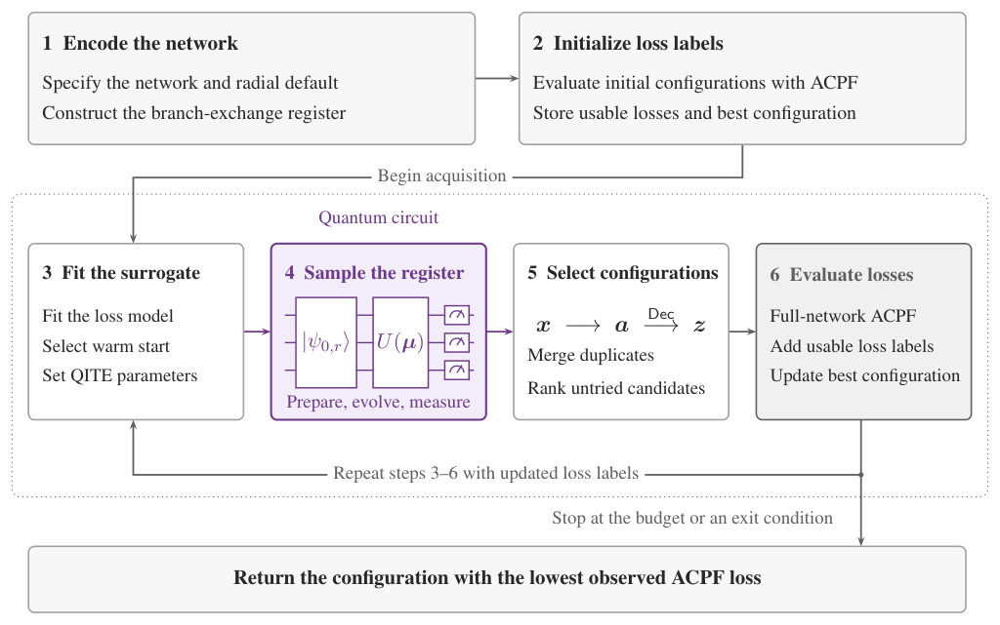
<figcaption class="paper-figure-caption"><b>Fig 1.</b> FIG. 1. Surrogate-assisted quantum imaginary-time evolution (QITE) for distribution network reconfiguration using branch- exchange encoding. The workflow begins with a radial default configuration, from which the branch-exchange register is constructed, while initial ACPF evaluations establish the loss-label set and incumbent configuration. In each subsequent round, the surrogate is fitted to the available labels, and the warm-start and QITE parameters are determined classically. The quantum circuit then prepares a fresh warm-start state, applies one QITE update, and samples the register. Measured bits x are unpacked into actions a and decoded into configurations z; aliases are merged, and...</figcaption>
</figure>
<figure class="paper-figure-card">
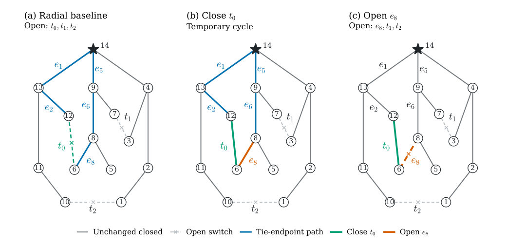
<figcaption class="paper-figure-caption"><b>Fig 2.</b> FIG. 2. Branch-exchange encoding for Test Case 1. The ordered ties (t0, t1, t2) require stage widths (3, 4, 4), giving an 11-qubit register with 211 = 2,048 branch-exchange codes that decode to 190 distinct radial configurations. (a) The default configuration is radial; the star marks the source bus. (b) Closing t0 forms one temporary cycle. The ordered path between its endpoints is P0 = (e8, e6, e5, e1, e2). (c) Opening e8 restores radiality. The action tuples (1, 0, 0) and (6, 0, 0) both produce this exchange: actions 1 and 6 select the first entry of the five-entry path through modulo indexing. The zero actions leave the configuration unchanged at the remaining stages. These two tuples...</figcaption>
</figure>
<figure class="paper-figure-card">
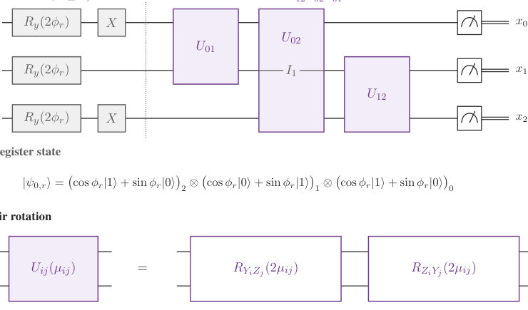
<figcaption class="paper-figure-caption"><b>Fig 3.</b> FIG. 3. Warm-start QITE circuit for a three-qubit register. (a) In this example, the incumbent representative is the state |x⋆⟩= |101⟩, with basis order q2q1q0. Each qubit receives Ry(2ϕr), followed by X when its incumbent bit is one, preparing the tensor-product state |ψ0,r⟩. The pair-wise unitaries then act from left to right in the order (0, 1), (0, 2), (1, 2), before computational-basis measurement returns the register bits. The identity I1 marks the unchanged middle qubit during U02. (b) The two commuting Pauli terms in Aij give the exact factorization of Uij into the rotations shown, each with angle 2µij. The parameters are computed classically through expectation matching under the...</figcaption>
</figure>
<figure class="paper-figure-card">
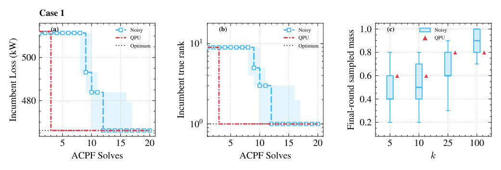
<figcaption class="paper-figure-caption"><b>Fig 4.</b> FIG. 4. Results for Case 1. Panels (a) and (b) show incumbent loss and overall rank as configurations are evaluated, with the noisy simulation median and interquartile range (IQR) shown in blue and the single hardware trajectory in red. Dotted horizontal lines indicate the optimum. Panel (c) shows the fraction of final-round samples that decode into the k lowest-loss configurations; boxes summarize the noisy simulation distribution, and triangles indicate the hardware result.</figcaption>
</figure>
<figure class="paper-figure-card">
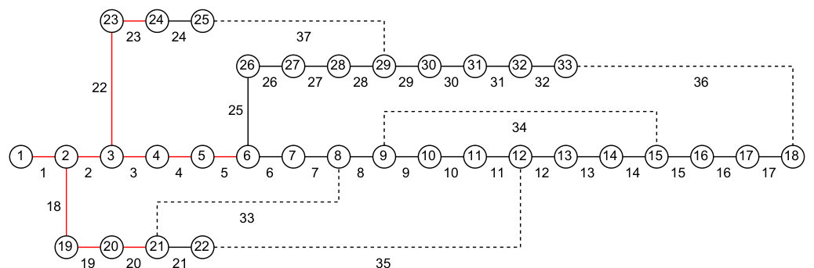
<figcaption class="paper-figure-caption"><b>Fig 5.</b> FIG. 5. Cases 2 and 3 are based off the same network, shown above. In Case 2 all lines are switchable, while for Case 3 the lines marked red are fixed closed.</figcaption>
</figure>
</div>
<p><strong>Summary.</strong> This paper presents a novel hybrid quantum-classical algorithm to solve the distribution network reconfiguration problem, aiming to minimize power line losses. It uses Iterative Quantum Imaginary-Time Evolution (QITE) guided by a surrogate model trained on classical power flow data. The method successfully finds near-optimal loss configurations across various test cases, demonstrating the potential of quantum computation for complex engineering optimization.</p>
<p><strong>Why it may be interesting.</strong> The core methodology—using quantum imaginary-time evolution guided by a classical surrogate model to solve a complex combinatorial optimization problem—is a direct application of quantum algorithms to a real-world engineering challenge, relevant to quantum computation applications.</p>
<details>
<summary>Detailed structure</summary>
<p><strong>Main problem.</strong> The paper addresses the combinatorial optimization problem of finding the optimal radial configuration in an electrical distribution network that minimizes total active line losses.</p>
<p><strong>Main result.</strong> The hybrid quantum-classical algorithm successfully reached minimal-loss configurations for six out of ten tested cases, achieving losses within 2.18% of the reference minimum for the remaining four.</p>
<p><strong>Method.</strong> It employs a hybrid approach combining Iterative Quantum Imaginary-Time Evolution (QITE) with a surrogate model trained on classical Active Current Power Flow (ACPF) results to guide quantum sampling.</p>
<p><strong>Model / system.</strong> The system is an electrical power distribution network, modeled using a branch-exchange encoding to represent switch configurations. The optimization objective is minimizing active line losses, $L(z)$.</p>
<p><strong>Key observables.</strong> Total active line losses $L(z)$ (kW), and the quantum expectation values $\langle Z_\Lambda 
angle_	au$ used in the QITE update.</p>
<p><strong>Important parameters / regimes.</strong> The surrogate model parameters $    heta$, the warm-start angle $\phi_r$, and the imaginary-time step $\Delta	au$.</p>
<p><strong>Assumptions / limitations.</strong> The algorithm assumes the branch-exchange encoding covers all radial topologies, and the QITE update is an approximation of the true imaginary-time evolution.</p>
<p><strong>Figures summary.</strong> Figure 1 illustrates the entire workflow: a surrogate-assisted QITE acquisition loop involving initialization, QITE evolution, candidate ranking, and full ACPF evaluation. Other figures detail the encoding and convergence trends.</p>
<p><strong>Paper structure.</strong> The paper details the formulation of the DNR problem, introduces the branch-exchange encoding, develops the surrogate model fitting procedure, and finally derives the specific finite QITE update rule necessary for the iterative quantum optimization process.</p>
</details>
<details>
<summary>Abstract</summary>
<p>We present a hybrid quantum-classical algorithm for distribution network reconfiguration, a combinatorial optimization problem on power distribution networks, that combines a radiality preserving branch-exchange encoding with iterative warm-start quantum imaginary-time evolution to minimize active line losses. The encoding uses a fixed-width binary representation of sequential branch-exchange actions, ensuring that every register outcome decodes to a radial configuration. The quantum subroutine is informed by a surrogate model fit to classically-solved alternating current power flow (ACPF) labels. After a set budget of ACPF solves and circuit samples is exhausted, the algorithm returns the lowest-loss configuration seen. We employ our algorithm on ten test cases, including seven commonly-used benchmark cases and three cases we modified from these and similar standard systems. We include two methods to reduce problem size, which enable extensions of the algorithm to larger networks. We successfully reach minimal-loss configurations for six cases and find configurations with losses from 0.2 percent to 2.18 percent above the reported reference minimal loss for the other four.</p>
</details>
<p><sub><a href="#top">↑ back to top</a></sub></p>
</details>
<h2 id="secondary-cond-mat-archives">Secondary cond-mat archives</h2>
<p><em>Papers from cond-mat.mtrl-sci, mes-hall, other, soft, supr-con. These archives are de-prioritized — they appear at the end regardless of relevance score.</em></p>
<h3 id="relevant-in-secondary-archives-16">Relevant in secondary archives (16)</h3>

<p><a id="paper-2609.39791"></a></p>
<h3 id="topological-fermi-polaron-polaritons-with-electrically-invertible-topology"><a href="http://arxiv.org/abs/2609.39791v1">Topological Fermi-polaron Polaritons with Electrically Invertible Topology</a></h3>
<p><strong>Authors:</strong> Xin Xie, Chenxi Liu, Yuze Liu, Lingxiao Zhou, Chulwon Lee, Yuhan Zhang, Nathanial Lydick, Kenji Watanabe, Takashi Taniguchi, Kai Sun, Hui Deng<br>
<strong>Type:</strong> both · <strong>Category:</strong> other · <strong>PDF:</strong> <a href="https://arxiv.org/pdf/2609.39791v1">https://arxiv.org/pdf/2609.39791v1</a><br>
<strong>Analysis basis:</strong> full PDF text, analyzed in chunks
<strong>Topic relevance:</strong> 🔥 <code>analog quantum simulation</code> <strong>4/5</strong> · <code>driven-dissipative phase transition</code> <strong>3/5</strong> · <code>methods for driven-dissipative</code> <strong>2/5</strong> · <code>Keldysh / 2PI / non-Gaussian methods</code> <strong>1/5</strong> · <code>Tavis-Cummings &amp; cavity-many-emitter</code> <strong>1/5</strong> · <code>interference shaping light</code> <strong>1/5</strong> · <code>quantum optics experiment</code> <strong>1/5</strong></p>
<div class="figure-strip-hint">↔ Scroll figures horizontally</div>
<div class="paper-figures-scroll">
<figure class="paper-figure-card">
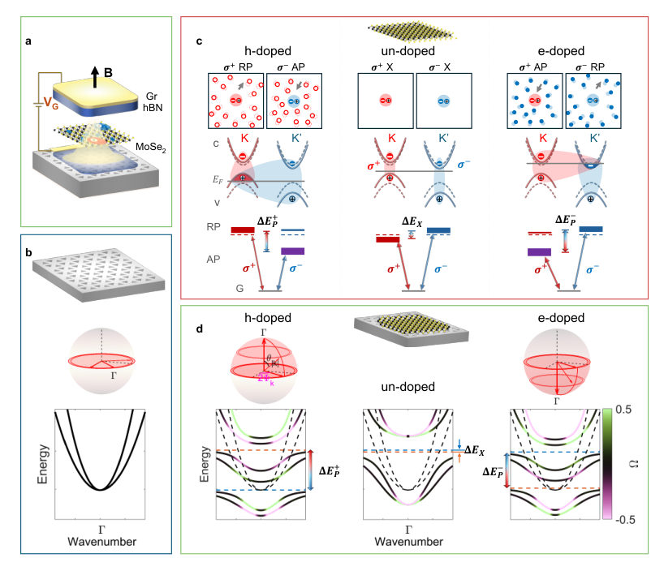
<figcaption class="paper-figure-caption"><b>Fig 1.</b> Figure 1. Gate-tunable topological Fermi-polaron polariton in a PhC–MoSe2 device. a,</figcaption>
</figure>
<figure class="paper-figure-card">
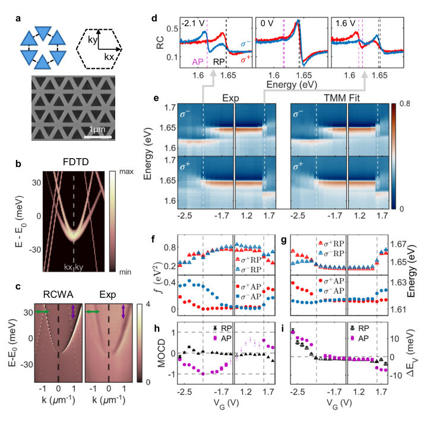
<figcaption class="paper-figure-caption"><b>Fig 2.</b> Figure 2. Experimental characterization of bare PhC and gated-MoSe2 ML. a, Schematic</figcaption>
</figure>
<figure class="paper-figure-card">
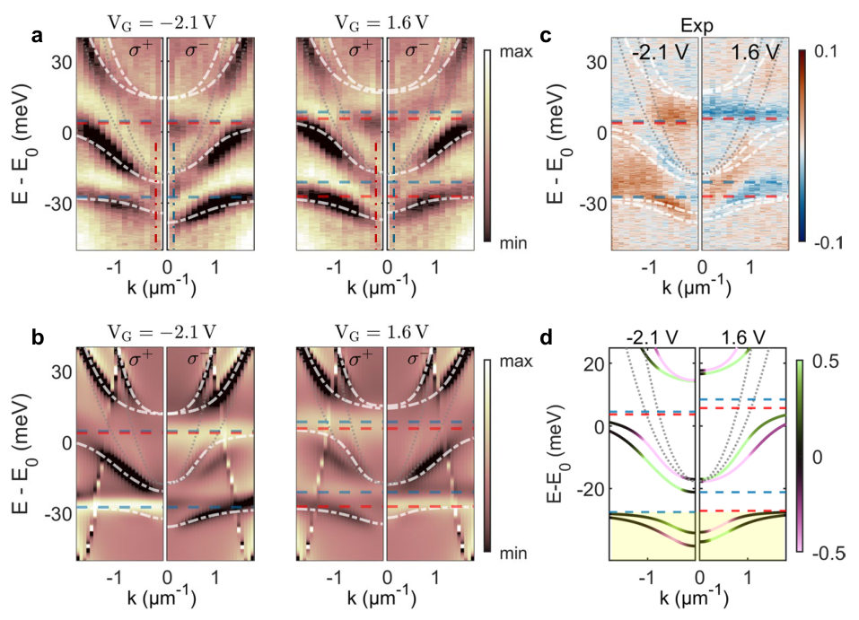
<figcaption class="paper-figure-caption"><b>Fig 3.</b> Figure 3. Topological Fermi-polaron polariton: band structure, circular dichroism and</figcaption>
</figure>
<figure class="paper-figure-card">
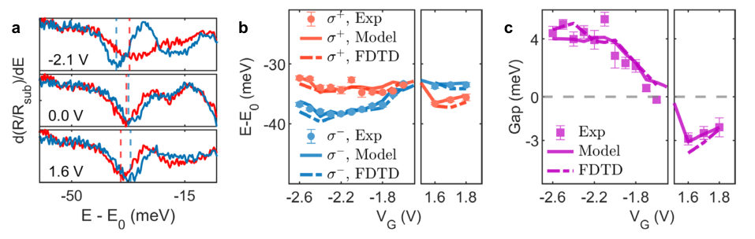
<figcaption class="paper-figure-caption"><b>Fig 4.</b> Figure 4. Electrical control of gap size in polaron-polaritons. a, Line cuts of derivative</figcaption>
</figure>
</div>

<p><strong>Summary.</strong> The research presents a novel platform using Fermi-polaron polaritons in gated $   ext{MoSe}_2$ coupled to a Photonic Crystal to create topological states. By leveraging gate-tunable many-body interactions, the system achieves large, electrically switchable topological gaps and can invert its Chern number, establishing a programmable platform for topological photonics.</p>
<p><strong>Why it may be interesting.</strong> This work directly addresses the engineering of topological phases in coupled light-matter systems, providing a mechanism (interaction-driven TRS breaking) to achieve robust, electrically tunable topological properties in solid-state photonics, which is highly relevant to quantum optics and condensed matter theory.</p>
<details>
<summary>Detailed structure</summary>
<p><strong>Main problem.</strong> The challenge is engineering optical Chern bands in polariton systems with large gaps and efficient electrical tunability, which is limited by weak time-reversal-symmetry (TRS) breaking mechanisms.</p>
<p><strong>Main result.</strong> The authors demonstrate a Fermi-polaron polariton platform that achieves electrically controllable topological gaps and can invert topological invariants like the Chern number by tuning the gate voltage.</p>
<p><strong>Method.</strong> The study combines experimental characterization using momentum-resolved magneto-optical reflection contrast (RC) spectroscopy with theoretical modeling using coupled Hamiltonian approaches and FDTD/RCWA simulations.</p>
<p><strong>Model / system.</strong> The system is a topological Bose-Fermi mixture—Fermi-polaron polaritons—formed by coupling excitons/polarons in a gate-controlled monolayer transition-metal dichalcogenide ($  ext{MoSe}_2$) to the photonic modes of a symmetry-engineered Photonic Crystal (PhC).</p>
<p><strong>Key observables.</strong> Topological invariants (Chern numbers, Berry curvature), polariton energy gaps ($\Delta E_{LP}$), and the sign/magnitude of the magneto-optical response (RMCD).</p>
<p><strong>Important parameters / regimes.</strong> Gate voltage ($V_G$) controlling doping (hole/electron), external magnetic field ($B$), and the strength of light-matter coupling.</p>
<p><strong>Assumptions / limitations.</strong> The analysis assumes the validity of the coupled Hamiltonian model and relies on fitting resonance parameters from experimental spectra.</p>
<p><strong>Figures summary.</strong> Figures illustrate the device structure, the gate-voltage dependence of polariton dispersions showing gap openings, and visualizations of the resulting Berry curvature maps confirming topological character.</p>
<p><strong>Paper structure.</strong> The paper progresses by first defining the physical platform and the limitations of previous work, then detailing the experimental/theoretical methodology (RC/Hamiltonian modeling), presenting the key results showing gap opening and topological control, and concluding with the implications for programmable photonics.</p>
</details>
<details>
<summary>Abstract</summary>
<p>Topological polaritons provide a route to engineer optical Chern bands, but realizing large gaps or efficient electrical tunability remains challenging because time-reversal-symmetry breaking in semiconductor polariton systems is typically limited by weak Zeeman splittings. Here, we demonstrate a topological Bose-Fermi mixture --- Fermi-polaron polaritons ---where large gaps and electrically invertible topology emerge from the interplay of Fermi-polaron many-body interactions, photonic symmetry, and strong light--matter coupling. Using a gate-controlled monolayer transition-metal dichalcogenide integrated with a symmetry-engineered photonic crystal, we create Fermi-polaron polaritons with topological band structures. The direct coupling between band topology and gate-tunable many-body interactions provides a mechanism for amplified time-reversal-symmetry breaking beyond bare Zeeman splitting and enables electrical inversion of topological gaps, Berry curvature, and Chern numbers. These results establish an electrically reconfigurable platform for interaction-driven topological states and programmable topological photonics.</p>
</details>
<p><sub><a href="#top">↑ back to top</a></sub></p>

<p><a id="paper-2609.39612"></a></p>
<h3 id="anisotropic-wavevector-dependent-damping-of-thickness-quantized-magnons"><a href="http://arxiv.org/abs/2609.39612v1">Anisotropic wavevector-dependent damping of thickness-quantized magnons</a></h3>
<p><strong>Authors:</strong> Tamara Azevedo, Rostyslav O. Serha, Yannik Kunz, Matthias R. Schweizer, Vitaliy I. Vasyuchka, Mathias Weiler, Andrii V. Chumak, Burkard Hillebrands, Mikhail Kostylev, Alexander A. Serga<br>
<strong>Type:</strong> experiment · <strong>Category:</strong> other · <strong>PDF:</strong> <a href="https://arxiv.org/pdf/2609.39612v1">https://arxiv.org/pdf/2609.39612v1</a><br>
<strong>Analysis basis:</strong> full PDF text, analyzed in chunks
<strong>Topic relevance:</strong> 🔥 <code>driven-dissipative phase transition</code> <strong>4/5</strong> · <code>correlated / nonlocal dissipation</code> <strong>1/5</strong> · <code>non-equilibrium universality</code> <strong>1/5</strong></p>
<div class="figure-strip-hint">↔ Scroll figures horizontally</div>
<div class="paper-figures-scroll">
<figure class="paper-figure-card">
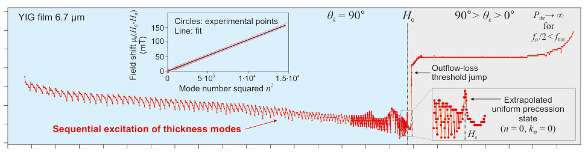
<figcaption class="paper-figure-caption"><b>Fig 1.</b> FIG. 1. Quasicontinuous parametric threshold spectroscopy of thickness-quantized magnons. (a) Schematic spin-wave spec- trum of an in-plane-magnetized YIG film under parallel pumping. Below the critical field Hc, the resonance condition fk = fp/2 is fulfilled for thickness-quantized modes with wavevectors perpendicular to the magnetization, θk = 90◦(both koop and kip are perpendicular to Ms). Above Hc, the threshold is determined by the parametric excitation of states on the fundamental spin- wave branch with 90◦&gt; θk &gt; 0◦. (b) Experimental scheme. A microstrip half-wave resonator generates the parallel-pumping field component h∥in the YIG film, while a vector network analyzer measures the...</figcaption>
</figure>
<figure class="paper-figure-card">
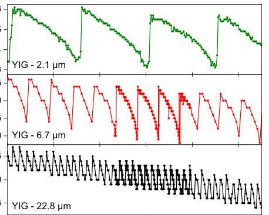
<figcaption class="paper-figure-caption"><b>Fig 2.</b> FIG. 2. Representative fragments of the parametric- instability threshold curve Pthr(µ0H) measured under par- allel pumping for YIG films with thicknesses of 22.8, 6.7, and 2.1 µm. The traces are plotted in separate panels for clar- ity. The spacing between neighboring teeth increases with decreasing film thickness, as expected for modes quantized across the film thickness.</figcaption>
</figure>
<figure class="paper-figure-card">
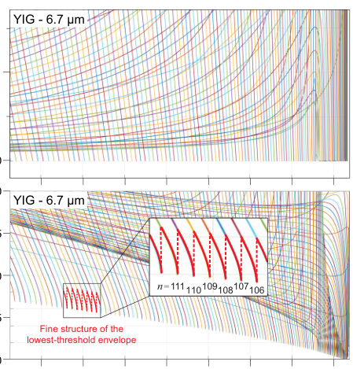
<figcaption class="paper-figure-caption"><b>Fig 3.</b> FIG. 3. Calculated parametric-instability threshold-field am- plitudes for thickness-quantized spin-wave modes in a 6.7 µm- thick YIG film under the experimental conditions, normalized to the absolute minimum of the threshold. Colored curves are the thresholds of individual thickness branches; the ob- servable threshold is the lowest of them at each field. (a) Thresholds calculated for a mode-independent loss parame- ter, ∆H(n, kip) = ∆H0. The threshold minima of succes- sive modes are then identical, so the dipole–exchange spec- trum and parametric coupling alone do not produce the ob- served mode-index dependence. (b) Thresholds calculated with the experimentally extracted...</figcaption>
</figure>
<figure class="paper-figure-card">
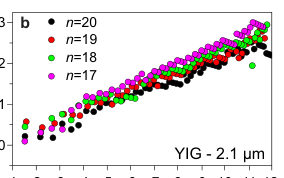
<figcaption class="paper-figure-caption"><b>Fig 4.</b> FIG. 4. Normalized magnetic-loss parameter ∆H ver- sus in-plane wavenumber kip for some consecutive thickness- quantized modes in (a) the 6.7 µm-thick YIG film (n = 106– 109) and (b) the 2.1 µm-thick YIG film (n = 17–20). For each thickness branch, ∆H is normalized to its value at kip = 0. The in-plane wavenumbers are obtained from the calculated dipole–exchange dispersion.</figcaption>
</figure>
</div>

<p><strong>Summary.</strong> This work investigates magnon damping in thin YIG films by measuring the parametric instability threshold. The authors demonstrate that damping is not a simple, mode-independent constant but depends anisotropically on the spin-wave wavevector components. This finding is crucial for accurately modeling spin-wave transport and nonlinear dynamics in confined magnetic structures.</p>
<p><strong>Why it may be interesting.</strong> The detailed characterization of wavevector-dependent damping mechanisms in magnons provides a concrete example of how geometric confinement and anisotropy modify fundamental material parameters, which is relevant for understanding energy dissipation in quantum magnetic systems.</p>
<details>
<summary>Detailed structure</summary>
<p><strong>Main problem.</strong> To overcome the limitation of describing magnon damping using a single, effective, mode-independent parameter, which can mask wavelength-dependent relaxation processes.</p>
<p><strong>Main result.</strong> The study reveals anisotropic wavevector-dependent damping in thickness-quantized magnons, evidenced by a linear dependence of the damping loss parameter on the in-plane wavevector component.</p>
<p><strong>Method.</strong> High-resolution parametric-instability spectroscopy is used to probe the threshold of parametric instability in YIG films, which is then analyzed using dipole-exchange theory.</p>
<p><strong>Model / system.</strong> The physical system is spin waves in micrometer-thick yttrium iron garnet (YIG) films, where the wavevector is quantized in the out-of-plane direction ($k_{oop}$) and varies continuously in the in-plane direction ($k_{ip}$).</p>
<p><strong>Key observables.</strong> The parametric instability threshold power ($P_{thr}$) and the extracted magnetic-loss parameter ($\Delta H(n, k_{ip})$).</p>
<p><strong>Important parameters / regimes.</strong> Film thickness ($d$), magnetic field ($\mu_0H$), in-plane wavevector ($k_{ip}$), and thickness-mode index ($n$).</p>
<p><strong>Assumptions / limitations.</strong> The analysis assumes that the observed sawtooth structure is due to mode switching and that the loss parameter can be locally extracted from the threshold power dependence.</p>
<p><strong>Figures summary.</strong> Figures show the characteristic sawtooth dependence of the instability threshold on the magnetic field, and comparisons between theoretical models using mode-independent versus wavevector-dependent damping successfully reproduce the observed modulation.</p>
<p><strong>Paper structure.</strong> The paper establishes the experimental technique using parametric instability spectroscopy to measure magnon damping. It then compares results obtained using simplified, mode-independent damping models against those derived from the full wavevector-dependent theory, demonstrating the necessity of anisotropy.</p>
</details>
<details>
<summary>Abstract</summary>
<p>Magnon damping is a key factor governing spin-wave transport and nonlinear dynamics of multimode magnon systems. However, many descriptions rely on the assumption of an effective mode-independent parameter, which can mask wavelength-dependent relaxation processes that depend on propagation geometry and mode profile. Here, we employ high-resolution parametric-instability spectroscopy to probe thickness-quantized spin waves with wavelengths down to about a hundred nanometers in micrometer-thick yttrium iron garnet films. The instability threshold exhibits a regular sawtooth dependence on the magnetic field, arising from switching between discrete thickness modes. Comparison with dipole--exchange theory reveals anisotropic wavevector-dependent damping that increases with mode number and depends differently on the in-plane and out-of-plane wavevector components.</p>
</details>
<p><sub><a href="#top">↑ back to top</a></sub></p>

<p><a id="paper-2609.39201"></a></p>
<h3 id="exact-analytic-solutions-of-classical-time-crystals"><a href="http://arxiv.org/abs/2609.39201v1">Exact analytic solutions of classical time crystals</a></h3>
<p><strong>Authors:</strong> Stavros Theodorakis, Athina Hadjizorzi<br>
<strong>Type:</strong> theory · <strong>Category:</strong> other · <strong>PDF:</strong> <a href="https://arxiv.org/pdf/2609.39201v1">https://arxiv.org/pdf/2609.39201v1</a><br>
<strong>Analysis basis:</strong> full PDF text, analyzed in chunks
<strong>Topic relevance:</strong> <code>driven-dissipative phase transition</code> <strong>3/5</strong> · <code>Keldysh / 2PI / non-Gaussian methods</code> <strong>2/5</strong> · <code>methods for driven-dissipative</code> <strong>2/5</strong> · <code>non-equilibrium universality</code> <strong>2/5</strong> · <code>Frenkel-Kontorova</code> <strong>1/5</strong> · <code>analog quantum simulation</code> <strong>1/5</strong> · <code>quantum measurements</code> <strong>1/5</strong> · <code>scars &amp; prethermalization</code> <strong>1/5</strong></p>
<div class="figure-strip-hint">↔ Scroll figures horizontally</div>
<div class="paper-figures-scroll">
<figure class="paper-figure-card">
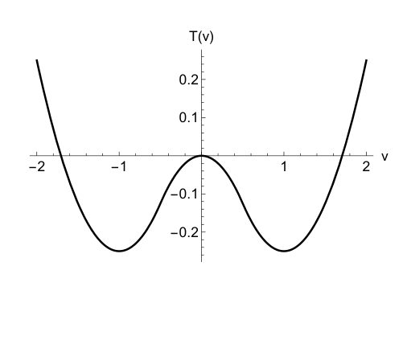
<figcaption class="paper-figure-caption"><b>Fig 1.</b> FIG. 1. The piecewise parabolic kinetic energy T (v) of Eq. (1)</figcaption>
</figure>
<figure class="paper-figure-card">
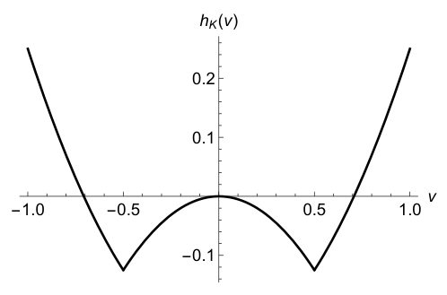
<figcaption class="paper-figure-caption"><b>Fig 2.</b> FIG. 2. The piecewise parabolic kinetic part of the Hamilto-</figcaption>
</figure>
<figure class="paper-figure-card">
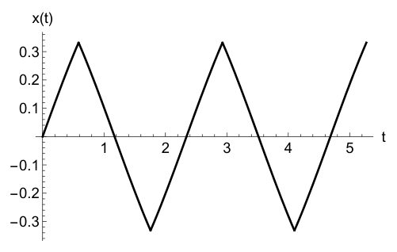
<figcaption class="paper-figure-caption"><b>Fig 3.</b> FIG. 3. A periodic solution for the position x(t) for ǫ = 0.1,</figcaption>
</figure>
<figure class="paper-figure-card">
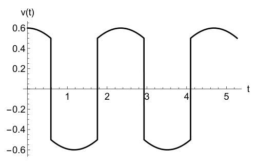
<figcaption class="paper-figure-caption"><b>Fig 4.</b> FIG. 4. A periodic solution for the speed v(t) for ǫ = 0.1,</figcaption>
</figure>
<figure class="paper-figure-card">
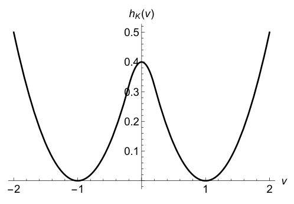
<figcaption class="paper-figure-caption"><b>Fig 5.</b> FIG. 5. The piecewise parabolic kinetic part hK of Eq. (22)</figcaption>
</figure>
</div>

<p><strong>Summary.</strong> This paper develops methods to find exact analytic solutions for classical time crystals by analyzing systems with complex kinetic energy terms. The authors show that by using piecewise parabolic approximations, they can model and solve systems that otherwise require complex elliptic integrals. This provides a powerful, solvable framework for studying non-linear, periodic dynamics exhibiting time-crystalline features.</p>
<p><strong>Why it may be interesting.</strong> The mathematical techniques developed for finding exact solutions in classical systems with non-standard kinetic terms (like piecewise parabolic or quartic) are highly relevant for modeling non-linear dynamics in quantum systems, especially those involving effective potentials or non-standard Hamiltonians.</p>
<details>
<summary>Detailed structure</summary>
<p><strong>Main problem.</strong> The paper focuses on finding exact analytic solutions for classical systems exhibiting time-crystalline behavior.</p>
<p><strong>Main result.</strong> The use of piecewise parabolic kinetic energy allows for the derivation of simple, periodic, and stable solutions that accurately emulate more complex systems, such as those with quartic kinetic energy.</p>
<p><strong>Method.</strong> The analysis employs the principle of least action to determine the system's trajectory after speed discontinuities, comparing actions to select the stable path.</p>
<p><strong>Model / system.</strong> The model is a classical mechanical system with a potential energy $V(x) = x(t)^2/2$ and a kinetic energy $T(v)$ that is piecewise parabolic or quartic in velocity. Time-crystalline behavior is characterized by kinetic energy minimized at non-zero speeds.</p>
<p><strong>Key observables.</strong> Position $x(t)$, speed $v(t)$, total energy $E$, and the action $S$ used for path selection.</p>
<p><strong>Important parameters / regimes.</strong> The system exhibits behavior dependent on the initial conditions and the boundaries where the kinetic energy function changes definition (e.g., $|v| = 1/2$ or $|v| = 1$).</p>
<p><strong>Assumptions / limitations.</strong> The primary assumption is that the system follows the path dictated by the principle of least action, favoring the branch with the lower action, and that the quartic kinetic energy can be accurately emulated by a piecewise parabolic form.</p>
<p><strong>Figures summary.</strong> Figures illustrate the piecewise parabolic kinetic energy $T(v)$ and Hamiltonian $h_K(v)$, and show the resulting periodic position and speed profiles for both the sinusoidal and emulated quartic cases.</p>
<p><strong>Paper structure.</strong> The paper introduces the problem using a piecewise parabolic kinetic energy, derives the equations of motion, analyzes the resulting periodic motion, and then extends the methodology to approximate systems with quartic kinetic energy, confirming the stability and periodicity through action minimization.</p>
</details>
<details>
<summary>Abstract</summary>
<p>We present examples of classical time crystals (in a parabolic potential for the position) that admit simple exact analytic solutions. The kinetic energy in these crystals is piecewise parabolic as a function of speed and is minimised at nonzero values of the speed. The solutions are periodic, while the speed acquires definite periodic discontinuities. The solutions are stable along the branches where the action is lower. We also examine the classical time crystal with quartic kinetic energy. We show how the quartic kinetic energy can be emulated by a piecewise parabolic one, leading to accurate and transparent solutions.</p>
</details>
<p><sub><a href="#top">↑ back to top</a></sub></p>

<p><a id="paper-2609.39947"></a></p>
<h3 id="thermal-magnon-transport-in-fmafm-bilayers"><a href="http://arxiv.org/abs/2609.39947v1">Thermal magnon transport in FM/AFM bilayers</a></h3>
<p><strong>Authors:</strong> Moumita Kundu, Ulrich Nowak<br>
<strong>Type:</strong> theory · <strong>Category:</strong> statistical mechanics · <strong>PDF:</strong> <a href="https://arxiv.org/pdf/2609.39947v1">https://arxiv.org/pdf/2609.39947v1</a><br>
<strong>Analysis basis:</strong> full PDF text, analyzed in chunks
<strong>Topic relevance:</strong> <code>Keldysh / 2PI / non-Gaussian methods</code> <strong>3/5</strong> · <code>non-equilibrium universality</code> <strong>3/5</strong> · <code>methods for driven-dissipative</code> <strong>2/5</strong> · <code>correlated / nonlocal dissipation</code> <strong>1/5</strong> · <code>driven-dissipative phase transition</code> <strong>1/5</strong> · <code>quantum measurements</code> <strong>1/5</strong> · <code>scars &amp; prethermalization</code> <strong>1/5</strong></p>
<div class="figure-strip-hint">↔ Scroll figures horizontally</div>
<div class="paper-figures-scroll">
<figure class="paper-figure-card">
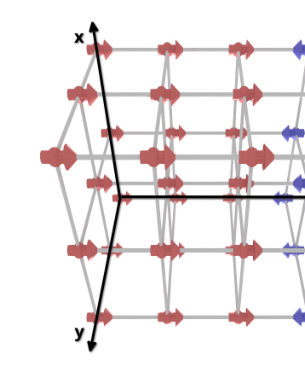
<figcaption class="paper-figure-caption"><b>Fig 1.</b> Figure 1: Sketch of the magnetic bilayer as implemented in our simulations, where the left part with all spins pointing to the right (+ˆz) models the FM and the right part models a layered AFM with spin pointing alternately left and right.</figcaption>
</figure>
<figure class="paper-figure-card">
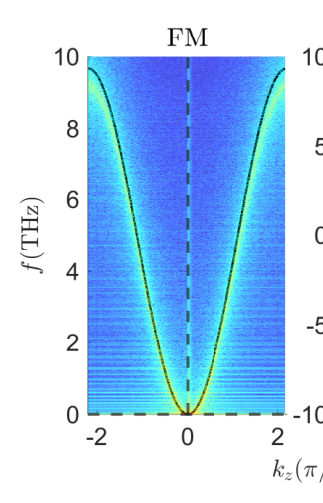
<figcaption class="paper-figure-caption"><b>Fig 2.</b> Figure 2: Magnon dispersion for thermal equilibrium conditions, on the left for the ferro- magnet, with only one mode, and on the right for the antiferromagnet, with two degenerate modes possessing opposite polarization.</figcaption>
</figure>
<figure class="paper-figure-card">
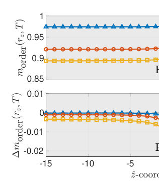
<figcaption class="paper-figure-caption"><b>Fig 3.</b> Figure 3: Order parameter profile (top) and magnon accumulation profile (bottom) for different temperatures T, where the FM is thermally excited and the AFM is at 0K.</figcaption>
</figure>
<figure class="paper-figure-card">
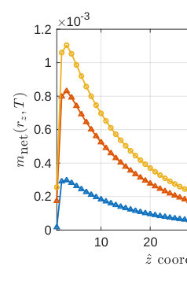
<figcaption class="paper-figure-caption"><b>Fig 4.</b> Figure 4: Net magnetization profile of the bilayer zoomed at the AFM. A finite net magnetization is found.</figcaption>
</figure>
<figure class="paper-figure-card">
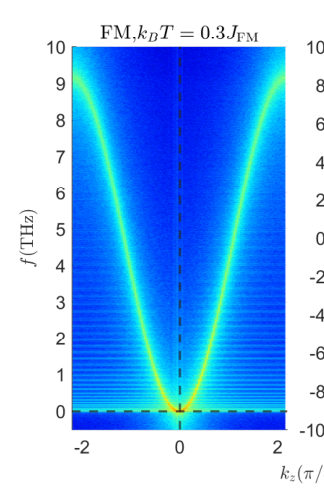
<figcaption class="paper-figure-caption"><b>Fig 5.</b> Figure 5: Non-equilibrium magnon dispersion of the bilayer where the FM (left) is ther- mally excited and magnons are injected into the AFM (right).</figcaption>
</figure>
</div>

<p><strong>Summary.</strong> This theoretical work examines how heat gradients drive magnon transport across a Ferromagnet/Antiferromagnet interface. By analyzing the resulting magnon dynamics, the authors show that the interface selectively filters magnon modes based on their chirality. This selectivity leads to a measurable, non-zero spin current and induced magnetization in the antiferromagnet, providing design rules for magnonic devices.</p>
<p><strong>Why it may be interesting.</strong> The study models non-equilibrium energy/momentum transfer (heat/magnons) across magnetic interfaces, which touches upon non-equilibrium statistical mechanics and energy transport in quantum systems.</p>
<details>
<summary>Detailed structure</summary>
<p><strong>Main problem.</strong> The study investigates magnon propagation and thermal transport in magnetic heterostructures, specifically FM/AFM bilayers, driven by non-equilibrium temperature gradients.</p>
<p><strong>Main result.</strong> The research demonstrates that the FM/AFM interface acts as a chiral filter, leading to a thermally-triggered, non-zero spin current and induced magnetization in the antiferromagnet, a phenomenon unexpected in bulk AFMs.</p>
<p><strong>Method.</strong> The authors employ a semi-classical approach using the stochastic Landau-Lifshitz-Gilbert equation to model magnon dynamics under thermal gradients.</p>
<p><strong>Model / system.</strong> The system is a bilayer composed of a ferromagnet (FM) and an antiferromagnet (AFM). The dynamics are governed by the s-LLG equation, and thermal effects are introduced via Gaussian white noise to model non-equilibrium magnon accumulation.</p>
<p><strong>Key observables.</strong> Magnon flux, non-equilibrium magnon accumulation, spin current ($J_s$), and the net magnetization ($m_{net}$) in the AFM.</p>
<p><strong>Important parameters / regimes.</strong> Temperature gradient (step or linear profile), damping parameter ($\gamma$), and the chirality of the magnon modes (RH vs. LH).</p>
<p><strong>Assumptions / limitations.</strong> The analysis assumes a single heat bath temperature and uses absorbing boundary conditions. The initial temperature gradient setup is acknowledged as a simplification of reality.</p>
<p><strong>Figures summary.</strong> Figures illustrate magnon dispersion relations (equilibrium and non-equilibrium), order parameter profiles, and the resulting magnon accumulation and net magnetization profiles across the bilayer interface.</p>
<p><strong>Paper structure.</strong> The paper progresses from defining the physical system and Hamiltonian to analyzing equilibrium dispersion, then modeling non-equilibrium transport using temperature gradients, and finally quantifying the resulting chiral spin currents and induced magnetization.</p>
</details>
<details>
<summary>Abstract</summary>
<p>Progress in information processing relies on spintronics, where magnetic states serve as efficient carriers for data storage and transfer. In this work, we theoretically study magnon propagation in a bilayer composed of a ferro-magnet and an antiferromagnet. For this purpose, we probe the spin Seebeck effect by introducing a spatially varying temperature profile. This generates a local magnon excitation and a continuous magnon flux from hot to cold regions which we quantify through the resulting non-equilibrium magnon accumulation. Based on the chirality of these modes, we identify specific constraints for magnon modes traveling either from the ferromagnet into the antiferromagnet or vice versa. A key finding is the observation of a thermally triggered spin current in the antiferromagnet, a phenomenon typically absent in bulk antiferromagnets that obey time-reversal symmetry. These results provide important insights into the design of heterostructures for magnonic chirality-selective spin transport.</p>
</details>
<p><sub><a href="#top">↑ back to top</a></sub></p>

<p><a id="paper-2609.40337"></a></p>
<h3 id="quantization-through-dissipation-and-the-optical-quantum-hall-effect"><a href="http://arxiv.org/abs/2609.40337v1">Quantization through Dissipation and the Optical Quantum Hall Effect</a></h3>
<p><strong>Authors:</strong> Zhenisbek Tagay, Ahmed Abouelkomsan, Yugo Onishi, Adbhut Gupta, Loren Pfeiffer, Liang Fu, N. P. Armitage<br>
<strong>Type:</strong> both · <strong>Category:</strong> other · <strong>PDF:</strong> <a href="https://arxiv.org/pdf/2609.40337v1">https://arxiv.org/pdf/2609.40337v1</a><br>
<strong>Analysis basis:</strong> full PDF text, analyzed in chunks
<strong>Topic relevance:</strong> <code>driven-dissipative phase transition</code> <strong>3/5</strong> · <code>Keldysh / 2PI / non-Gaussian methods</code> <strong>2/5</strong> · <code>methods for driven-dissipative</code> <strong>2/5</strong> · <code>non-equilibrium universality</code> <strong>2/5</strong> · <code>correlated / nonlocal dissipation</code> <strong>1/5</strong> · <code>quantum measurements</code> <strong>1/5</strong></p>
<div class="figure-strip-hint">↔ Scroll figures horizontally</div>
<div class="paper-figures-scroll">
<figure class="paper-figure-card">
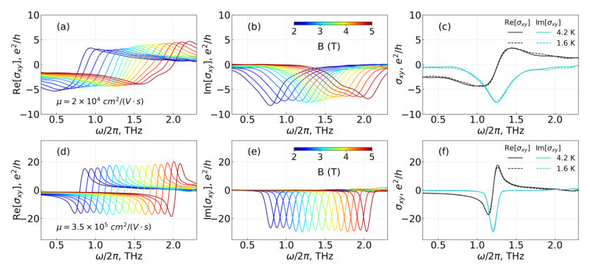
<figcaption class="paper-figure-caption"><b>Fig 1.</b> Figure 1. THz range complex Hall conductivity for 2DEG (a) Real and (b) imaginary Hall conductance σxy(ω) of lower-mobility 2DEG at T = 4.2 K and various magnetic fields. (c) Comparison between σxy(ω) measured at T = 4.2 K and T = 1.6 K. (d)-(f) Same plots for higher-mobility 2DEG.</figcaption>
</figure>
<figure class="paper-figure-card">
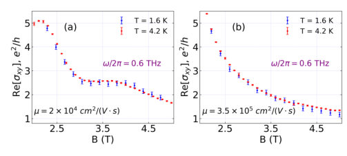
<figcaption class="paper-figure-caption"><b>Fig 2.</b> Figure 2. Magnetic field dependence of Re[σxy] at ω/2π = 0.6 THz for (a) lower-mobility and (b) higher- mobility samples at two different temperatures.</figcaption>
</figure>
<figure class="paper-figure-card">
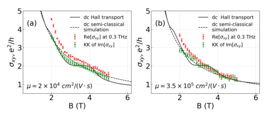
<figcaption class="paper-figure-caption"><b>Fig 3.</b> Figure 3. Comparison between dc and THz Hall mea- surements as a function of magnetic field for (a) lower- mobility and (b) higher-mobility 2DEG samples. Solid black lines indicate dc Hall transport measurements. Dashed black line shows semi-classical dc Hall prediction based on extracted carrier density. Data in red corresponds to Re[σxy] at lowest part of our spectral range 0.3 THz. Green dots represent Kramers-Kronig (KK) transformation of dissipative Im[σxy] calculated over 0.3 - 2.5 THz spectral range.</figcaption>
</figure>
<figure class="paper-figure-card">
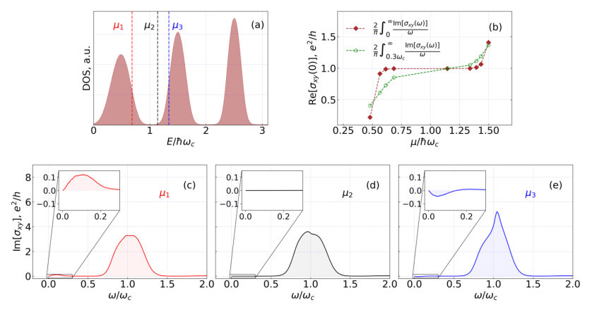
<figcaption class="paper-figure-caption"><b>Fig 4.</b> Figure 4. Numerical simulations (a) Density of states D(E). (b) Re[σxy(0)] computed from Kramers-Kronig of Im[σxy(ω)] for various chemical potentials µ. Red diamonds indicate the integration over entire ω range, green circles show integration which excludes low frequency range ω &lt; 0.3ωc (c)-(e) Im[σxy(ω)] computed via Kubo formula for 3 different chemical potentials shown in (a). Insets show magnified views of the low-frequency contributions.</figcaption>
</figure>
<figure class="paper-figure-card">
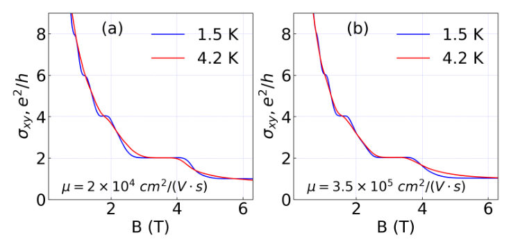
<figcaption class="paper-figure-caption"><b>Fig 5.</b> Figure 5. DC Hall conductance for lower- (a) and higher-mobility (b) samples, respectively. Both the 1.5 K and 4.2 K data exhibit a well-defined ν = 2 plateau, with the plateau extending over a slightly wider magnetic-field range at the lower temperature. At 1.5 K, additional plateaus corresponding to ν = 1, 4, 6, and 8 are also resolved.</figcaption>
</figure>
</div>

<p><strong>Summary.</strong> This work proposes a novel understanding of the quantized Hall conductivity by analyzing the system's finite-frequency optical response using terahertz measurements. By applying the Kramers-Kronig relation, the authors show that the quantization plateau only emerges when the low-frequency, dissipative contributions from disorder-induced impurity states are accounted for. This establishes a quantitative link between optical spectroscopy and fundamental topological transport properties.</p>
<p><strong>Why it may be interesting.</strong> The explicit link between the finite-frequency optical response and the DC quantized transport coefficient provides a powerful, dynamical mechanism for understanding topological quantization, which is relevant to open quantum systems where dissipation plays a role.</p>
<details>
<summary>Detailed structure</summary>
<p><strong>Main problem.</strong> To establish an alternative theoretical route to understanding the exact quantization of the Hall conductivity ($\sigma_{xy}$), moving beyond standard edge-channel or topological arguments.</p>
<p><strong>Main result.</strong> Quantization is recovered by including a faint, low-frequency, topologically enforced dissipative contribution from impurity states when relating the DC Hall conductivity to the finite-frequency optical response via the Kramers-Kronig relation.</p>
<p><strong>Method.</strong> The study combines high-precision terahertz Faraday rotation measurements (experiment) with the Kramers-Kronig integral transform and numerical calculations for disordered electron systems (theory).</p>
<p><strong>Model / system.</strong> The system is a two-dimensional electron gas (2DEG) in GaAs/AlGaAs heterostructures subjected to a strong magnetic field, exhibiting the Integer Quantum Hall Effect.</p>
<p><strong>Key observables.</strong> Hall conductivity $\sigma_{xy}(\omega)$ (both real and imaginary parts), DC Hall conductivity $\sigma_{xy}(0)$, and the cyclotron resonance frequency ($\omega_c$).</p>
<p><strong>Important parameters / regimes.</strong> Low frequency ($\omega \ll \omega_c$), low temperature (1.5 K, 4.2 K), and the presence/absence of disorder-induced impurity states.</p>
<p><strong>Assumptions / limitations.</strong> The validity of the Kramers-Kronig relation linking the DC limit to the integral over the finite-frequency spectrum, and that the low-frequency spectral weight carries the necessary topological information.</p>
<p><strong>Figures summary.</strong> Figures illustrate the frequency dependence of $   ext{Re}[\sigma_{xy}(\omega)]$ and $ ext{Im}[\sigma_{xy}(\omega)]$ for different mobility samples, demonstrating that the low-frequency spectral weight is crucial for reproducing the quantized DC plateau via KK reconstruction.</p>
<p><strong>Paper structure.</strong> The paper first reviews the established quantization mechanisms, then details the THz measurement techniques to obtain $\sigma_{xy}(\omega)$, and finally uses the KK relation to show that only the inclusion of low-frequency, impurity-related spectral weight recovers the quantized DC plateau.</p>
</details>
<details>
<summary>Abstract</summary>
<p>The integer quantum Hall effect remains the most paradigmatic and remarkable example of exact quantization in condensed matter physics. Its Hall conductivity $σ_{xy}$ is fixed to $e^2/h$ times an integer to a precision limited only by measurement and independent of disorder or interactions. This robustness has several explanations, each capturing a strikingly different piece of the physics. In Laughlin's gauge argument, flux insertion pumps an integer charge between edges, so quantization follows from gauge invariance alone. The edge-channel picture instead attributes transport to chiral, ballistic 1D channels at the sample boundary, one per filled Landau level. Bulk arguments tie $σ_{xy}$ to a topological invariant of the disordered system, with extended states compensating exactly for the current not carried by localized ones. Here we demonstrate an additional route to understanding quantization, rooted in the finite-frequency dissipative electrodynamics of the bulk. Using high-precision terahertz Faraday rotation and numerics, we show that the cyclotron resonance alone does not give quantized plateaus under Kramers-Kronig transformation. Quantization is recovered only once a faint, low-frequency, topologically enforced dissipative contribution from impurity states is included. This dynamical mechanism, hiding in plain sight within the dissipative response, ties the DC value to the finite-frequency optical response and offers a new route to quantization through the optical Hall effect.</p>
</details>
<p><sub><a href="#top">↑ back to top</a></sub></p>

<p><a id="paper-2609.38624"></a></p>
<h3 id="three-dimensional-shankar-skyrmions-in-frustrated-antiferromagnets"><a href="http://arxiv.org/abs/2609.38624v1">Three-Dimensional Shankar Skyrmions in Frustrated Antiferromagnets</a></h3>
<p><strong>Authors:</strong> Vladyslav M. Kuchkin, Ricardo Rama-Eiroa, Carlos Saji, Alvaro S. Nunez, Roberto E. Troncoso<br>
<strong>Type:</strong> theory · <strong>Category:</strong> other · <strong>PDF:</strong> <a href="https://arxiv.org/pdf/2609.38624v1">https://arxiv.org/pdf/2609.38624v1</a><br>
<strong>Analysis basis:</strong> full PDF text, analyzed in chunks
<strong>Topic relevance:</strong> <code>analog quantum simulation</code> <strong>3/5</strong> · <code>Keldysh / 2PI / non-Gaussian methods</code> <strong>1/5</strong></p>
<div class="figure-strip-hint">↔ Scroll figures horizontally</div>
<div class="paper-figures-scroll">
<figure class="paper-figure-card">

<figcaption class="paper-figure-caption"><b>Fig 1.</b> Figure 1. Numerically relaxed 3D Shankar texture in a frustrated bipartite AF. (a) Staggered N´eel field n in the full simulation cell. (b) N´eel-field configurations stabilized for D &gt; 0 and D &lt; 0; the lower images provide top views and highlight the change in color winding upon reversing the sign of D. Panels (c) and (d) show the central longitudinal yz (x = 0) and transverse xy (z = 0) cross sections of the N´eel texture. (e) Corresponding microscopic spin field s, with the analogous cross sections shown in (f) and (g). Arrows and colors encode the local orientation of the respective vector fields. The lattice schematics illustrate the staggered transformation on the two AF sublattices....</figcaption>
</figure>
<figure class="paper-figure-card">

<figcaption class="paper-figure-caption"><b>Fig 2.</b> Figure 2. Numerically stabilized Shankar monopole in the model of Eq. (3). (a) The four-component field ν is represented by the isosurfaces ν3 = 0 and ν4 = ±0.7. (b) Additional level sets, ν3 = 0, ±0.8 and ν4 = ±0.7, ±0.9, reveal the nested and mutually linked structure associated with the nontrivial three-dimensional winding. (c) Under the Hopf map, m1 = 2(ν1ν3+ν2ν4), m2 = 2(ν2ν3−ν1ν4), and m3 = ν2 1 +ν2 2 −ν2 3 −ν2 4, the Shankar texture is projected onto a smooth hopfion, shown through the isosurface m3 = 0, with color encoding the in- plane components (m1, m2).</figcaption>
</figure>
<figure class="paper-figure-card">

<figcaption class="paper-figure-caption"><b>Fig 3.</b> Fig. 1 shows the relaxed Shankar texture in both the staggered N´eel (panel (a)) and microscopic spin (panel (e)) representations. The texture contains two antiferromag- netic BPs [19, 32], identified in the central cross sections (x = 0) of the N´eel and spin field, panels (c) and (f) respectively. These singular cores are regularized by the smooth four-component field ν, which carries the nonzero Shankar winding. Fig. 1(b) and the corresponding nz = 0 isosurfaces, further show that reversing the sign of the DMI reverses the handedness of the texture [35]. Fig. 1(e) shows discrete-lattice Shankar textures, and cross sections yz (x = 0) and xy (z = 0) at panels (f) and (g), obtained without...</figcaption>
</figure>
<figure class="paper-figure-card">

<figcaption class="paper-figure-caption"><b>Fig 4.</b> Figure 3. Low-amplitude dynamics of the hopfion and Shankar skyrmion. (a) Normalized spectral response following the weak easy-axis anisotropy pulse. The labeled resonances fH1, fS1, and fS2 denote the hopfion internal resonance and the two texture-associated Shankar resonances, respectively. (b–d) Spatial profiles of the normalized internal mode amplitude, |δnint (r; f)|, where δnint (r; f) is the local harmonic response at frequency f after subtraction of the best-fit global rotation. (b) Hopfion at fH1 ≃1.68×10−3, shown in the central xz cross- section (y = 33). (c,d) Shankar skyrmion at fS1 ≃1.18 × 10−3</figcaption>
</figure>
</div>

<p><strong>Summary.</strong> This paper develops a comprehensive continuum theory for 3D Shankar skyrmions in frustrated antiferromagnets. By analyzing the energy functional and applying scaling arguments, the authors establish the conditions for these topological textures to maintain a finite equilibrium size. The work is significant for providing a unified theoretical platform to study the statics and dynamics of complex non-Abelian magnetism.</p>
<p><strong>Why it may be interesting.</strong> The work provides a detailed theoretical framework for understanding complex, non-Abelian topological textures in magnetic materials, linking continuum field theory to specific material interactions (DMI, frustration).</p>
<details>
<summary>Detailed structure</summary>
<p><strong>Main problem.</strong> The paper formulates a continuum theory for three-dimensional (3D) Shankar skyrmions in frustrated chiral antiferromagnets and derives conditions for their existence as metastable finite-size solitons.</p>
<p><strong>Main result.</strong> The continuum framework unifies the microscopic origin, stabilization, and dynamics of these skyrmions, establishing frustrated chiral AFs as promising hosts for 3D non-Abelian topological textures.</p>
<p><strong>Method.</strong> The authors employ continuum theory, Derrick–Hobart scaling analysis, and gradient expansions, supplemented by numerical minimization and spectral analysis to characterize the topological excitations.</p>
<p><strong>Model / system.</strong> The system studied is frustrated chiral antiferromagnets (AFs). The model involves spin Hamiltonians incorporating exchange, Dzyaloshinskii–Moriya interaction (DMI), and anisotropy, which are mapped onto continuum field theories using $S^3$ embeddings.</p>
<p><strong>Key observables.</strong> Shankar winding number ($Q$), full $S^3$ winding number ($Q_
u$), characteristic finite-frequency collective mode (coherent breathing oscillations), and non-rigid excitation amplitudes.</p>
<p><strong>Important parameters / regimes.</strong> The stability of the finite size is determined by balancing exchange, DMI, anisotropy, and frustration effects via scaling analysis.</p>
<p><strong>Assumptions / limitations.</strong> The analysis relies on continuum approximations, gradient expansions (retaining up to fourth-order terms), and the use of $S^3$ embeddings to regularize singular cores like Bloch points.</p>
<p><strong>Figures summary.</strong> Figures compare low-amplitude dynamics, showing spectral responses for both Hopfion and Shankar modes, and spatial profiles of internal mode amplitudes for both textures.</p>
<p><strong>Paper structure.</strong> The paper develops the continuum theory from multiple microscopic routes (bipartite vs. noncollinear AFs), applies scaling arguments to find stable sizes, and then uses spectral analysis to distinguish genuine internal excitations (resonances) from simple rigid rotations.</p>
</details>
<details>
<summary>Abstract</summary>
<p>We formulate a continuum theory for three-dimensional (3D) Shankar skyrmions in frustrated chiral antiferromagnets (AFs) and derive the conditions for metastable finite-size $π_3(SO(3))$ solitons. A Derrick--Hobart scaling analysis shows that exchange, Dzyaloshinskii--Moriya interaction (DMI), anisotropy, and frustration can balance to set a finite equilibrium size. We identify two microscopic routes to this common topological and stabilization framework: intrinsic rotation-frame order in noncollinear AFs and an $\mathbb{S}^3$ extension of an amplitude-softened Néel field. In the latter, the smooth four-component texture projects onto a Néel field containing a spatially separated pair of oppositely charged Bloch points. Numerical minimization yields metastable monopole textures, while the effective dynamics identifies coherent breathing oscillations as their characteristic finite-frequency collective mode. Our results provide a microscopic framework for the statics and dynamics of Shankar skyrmions and identify frustrated chiral AFs as promising hosts of 3D non-Abelian topological textures.</p>
</details>
<p><sub><a href="#top">↑ back to top</a></sub></p>

<p><a id="paper-2609.40059"></a></p>
<h3 id="fingerprints-of-unconventional-pairing-in-superconductor-hole-gas-heterostructures"><a href="http://arxiv.org/abs/2609.40059v1">Fingerprints of unconventional pairing in superconductor-hole-gas heterostructures</a></h3>
<p><strong>Authors:</strong> Serafim S. Babkin, Karsten Flensberg, Jeroen Danon, Maksym Serbyn<br>
<strong>Type:</strong> theory · <strong>Category:</strong> other · <strong>PDF:</strong> <a href="https://arxiv.org/pdf/2609.40059v1">https://arxiv.org/pdf/2609.40059v1</a><br>
<strong>Analysis basis:</strong> full PDF text, analyzed in chunks
<strong>Topic relevance:</strong> <code>Keldysh / 2PI / non-Gaussian methods</code> <strong>3/5</strong></p>
<div class="figure-strip-hint">↔ Scroll figures horizontally</div>
<div class="paper-figures-scroll">
<figure class="paper-figure-card">

<figcaption class="paper-figure-caption"><b>Fig 1.</b> FIG. 1. Proximitized HG. (a) SC–HG heterostructure in an in-plane magnetic field B; interlayer tunneling (dashed arrows) induces superconducting correlations in the hole gas. (b) Hole band structure: the chemical potential µ resides in the Rashba- split heavy-hole (HH) bands, separated by EHL from the light-hole (LH) band; ζF and ζR encode HH–LH mixing. (c) Fermi surfaces of the Rashba-split bands (±), whose spin texture winds three times, reflecting cubic Rashba SOC. (d)-(e) Interplay of angular dependences of the induced pairing ∆± ϕ (d) and Zeeman energy |V ± ϕ | (e) on the Fermi surface produces the angle- dependent gap closures underlying all signatures discussed in the text, both...</figcaption>
</figure>
<figure class="paper-figure-card">

<figcaption class="paper-figure-caption"><b>Fig 2.</b> FIG. 2. Field-induced non-analyticities in the HG response. Components of (a) the superfluid-stiffness tensor and (b) the spin susceptibility as a function of in-plane field B at fixed di- rection ϕB = 0. Steps occur at the gap-closure fields (dashed lines), where a Bogoliubov Fermi surface emerges or changes topology in one of the Rashba-split bands (insets). Note the finite susceptibility χ0 at B = 0 and the nonzero xy compo- nents, both distinctive of the hybridized HG. The parameters used for these plots are the same as for Fig.1.</figcaption>
</figure>
<figure class="paper-figure-card">

<figcaption class="paper-figure-caption"><b>Fig 3.</b> FIG. 3. Fourier harmonics |Qn| of the angular depen- dence Q(ϕB) for B = 0.2∆of the superfluid-stiffness tensor, Eq. (12). In the trivial limit (green), only s-wave pairing is retained and the cubic-Rashba-related term in V ± ϕ is omit- ted, yielding only Q0 ̸= 0. In the full model (violet), even harmonics n = ±2, ±4, ±6 emerge, which is a direct finger- print of induced p- and d-wave pairing and/or cubic Rashba SOC. The parameters used for these plots are the same as for Fig. 1 except ϕB is varied now.</figcaption>
</figure>
</div>

<p><strong>Summary.</strong> This paper develops a theoretical protocol to detect unconventional pairing symmetries in superconductor-hole-gas heterostructures using transport measurements. By analyzing the field dependence and angular harmonics of the superfluid stiffness and spin susceptibility, the authors show that distinct, measurable signatures can be extracted, providing a powerful diagnostic tool for quantum materials research.</p>
<p><strong>Why it may be interesting.</strong> This work provides a powerful, purely transport-based diagnostic tool for probing complex superconducting symmetries in hybrid quantum materials, which is highly relevant to understanding emergent phenomena in condensed matter systems.</p>
<details>
<summary>Detailed structure</summary>
<p><strong>Main problem.</strong> The primary challenge is developing a transport-free method to experimentally identify and characterize unconventional pairing symmetries (like p-wave or d-wave) within superconductor-hole-gas (SC-HG) heterostructures.</p>
<p><strong>Main result.</strong> The study proposes that the superfluid stiffness tensor's angular dependence, analyzed via Fourier harmonics, and field-induced non-analyticities in both stiffness and susceptibility, serve as distinct fingerprints for unconventional pairing and Rashba coupling.</p>
<p><strong>Method.</strong> The authors calculate the superfluid stiffness ($
ho_s$) and spin susceptibility ($\chi$) using a field-theoretical approach based on the Bogoliubov-de Gennes Hamiltonian, isolating the contributions from the hole gas (HG) from the superconductor (SC).</p>
<p><strong>Model / system.</strong> The system is a heterostructure composed of a superconductor and a two-dimensional hole gas (HG) subjected to an in-plane magnetic field. The HG is modeled using the Luttinger-Kohn Hamiltonian, incorporating Rashba spin-orbit coupling (SOC).</p>
<p><strong>Key observables.</strong> Superfluid stiffness tensor ($
ho_{s,\alphaeta}$), spin susceptibility ($\chi_{\alphaeta}$), step-like non-analyticities in $
ho_s$ and $\chi$ vs. field $B$, and Fourier harmonics ($Q_n$) of the angular dependence of $
ho_s$.</p>
<p><strong>Important parameters / regimes.</strong> In-plane magnetic field $\mathbf{B}$, induced superconducting gap ($\Delta$), Rashba coupling strength ($\alpha_R$), and the Pauli limit field ($B_P$).</p>
<p><strong>Assumptions / limitations.</strong> The SC contribution is treated as a smooth background, allowing the HG signatures to be isolated by looking at specific combinations of observables. The analysis relies on clean-limit approximations for the HG response.</p>
<p><strong>Figures summary.</strong> Figures illustrate the SC-HG setup in an in-plane field, showing the Rashba-split band structure and spin texture. Subsequent figures demonstrate field-induced steps in $
ho_s$ and $\chi$ (Fig. 2) and the emergence of even Fourier harmonics ($n=\pm 2, \pm 4, \dots$) in the angular dependence of $
ho_s$ (Fig. 3).</p>
<p><strong>Paper structure.</strong> The paper establishes the theoretical framework by defining the Hamiltonian and calculating the response functions ($
ho_s, \chi$). It then details the diagnostic signatures: field-dependent steps (related to gap closing) and angular harmonics (related to pairing symmetry).</p>
</details>
<details>
<summary>Abstract</summary>
<p>Superconductor and two-dimensional hole gas heterostructures are promising platforms for quantum devices, but their intrinsic properties, e.g., unconventional pairings, are hard to access experimentally. Here, we show that the in-plane-field dependence of the superfluid stiffness and spin susceptibility exhibits nonanalyticities encoding the induced gap structure in the hole gas. Additionally, Fourier harmonics of the stiffness tensor's field-angle dependence, accessible via kinetic-inductance measurements, provide fingerprints of unconventional pairing and cubic Rashba coupling.</p>
</details>
<p><sub><a href="#top">↑ back to top</a></sub></p>

<p><a id="paper-2609.40308"></a></p>
<h3 id="phase-field-modeling-of-liquid-phases-with-ordering"><a href="http://arxiv.org/abs/2609.40308v1">Phase-Field Modeling of Liquid Phases with Ordering</a></h3>
<p><strong>Authors:</strong> Yanzhou Ji, Chengyin Wu<br>
<strong>Type:</strong> theory · <strong>Category:</strong> statistical mechanics · <strong>PDF:</strong> <a href="https://arxiv.org/pdf/2609.40308v1">https://arxiv.org/pdf/2609.40308v1</a><br>
<strong>Analysis basis:</strong> full PDF text, analyzed in chunks
<strong>Topic relevance:</strong> <code>driven-dissipative phase transition</code> <strong>2/5</strong> · <code>methods for driven-dissipative</code> <strong>2/5</strong> · <code>non-equilibrium universality</code> <strong>2/5</strong> · <code>Keldysh / 2PI / non-Gaussian methods</code> <strong>1/5</strong> · <code>analog quantum simulation</code> <strong>1/5</strong> · <code>quantum measurements</code> <strong>1/5</strong></p>
<div class="figure-strip-hint">↔ Scroll figures horizontally</div>
<div class="paper-figures-scroll">
<figure class="paper-figure-card">

<figcaption class="paper-figure-caption"><b>Fig 1.</b> Fig. 1 Illustration of the phase-field model for liquid phases described by the associate model</figcaption>
</figure>
<figure class="paper-figure-card">

<figcaption class="paper-figure-caption"><b>Fig 2.</b> Fig. 2 Phase-field simulation of IPOP evolution in homogeneous liquid phases of Na-Sb alloy at 1000 K. (a) IPOP evolution under different 𝐿𝐿𝜉𝜉 values for a fixed Sb composition of 0.1 and initial IPOP value of 0.1, towards the equilibrium value of 0.142857; (b) IPOP evolution trajectories for different Sb compositions and initial IPOP values towards equilibrium (red line).</figcaption>
</figure>
<figure class="paper-figure-card">

<figcaption class="paper-figure-caption"><b>Fig 3.</b> Fig. 3 (a) Free energy landscapes for the liquid and compound phases. (b) Evolution</figcaption>
</figure>
<figure class="paper-figure-card">

<figcaption class="paper-figure-caption"><b>Fig 4.</b> Fig. 4 Phase-field simulation of stoichiometric Na3Sb growth from a liquid phase in a Na-10 at.%Sb alloy with initial 𝜉𝜉= 0.1 at 1000 K and 𝜉𝜉 reaching internal equilibrium for every time step. (a) Evolution of the phase order parameter. (b) Evolution of the Sb composition. (c)</figcaption>
</figure>
<figure class="paper-figure-card">

<figcaption class="paper-figure-caption"><b>Fig 5.</b> Fig. 5 Phase-field simulation of IPOP evolution in homogeneous liquid phases of Na-Sn alloy</figcaption>
</figure>
</div>

<p><strong>Summary.</strong> This work establishes a rigorous theoretical framework to integrate complex thermodynamic descriptions of liquid ordering, such as the MQMPA model, into phase-field simulations. By defining Internal Process Order Parameters (IPOPs) and evolving them via Allen-Cahn equations, the authors enable the prediction of microstructure evolution in liquid alloys with strong ordering tendencies. This advances the predictive capability of computational materials science for systems relevant to energy storage.</p>
<p><strong>Why it may be interesting.</strong> While the primary focus is materials thermodynamics, the use of Allen-Cahn equations to model the relaxation of internal degrees of freedom (IPOPs) is a general technique for describing non-equilibrium phase transitions, which has parallels in modeling complex quantum many-body dynamics.</p>
<details>
<summary>Detailed structure</summary>
<p><strong>Main problem.</strong> The core challenge is developing a unified framework to incorporate complex, composition-dependent thermodynamic descriptions of liquid ordering (like Associate or MQMPA models) directly into phase-field simulations.</p>
<p><strong>Main result.</strong> The authors successfully propose a methodology where internal degrees of freedom related to ordering are modeled as Internal Process Order Parameters (IPOPs), whose evolution is governed by Allen-Cahn equations coupled to standard phase-field dynamics.</p>
<p><strong>Method.</strong> The approach involves identifying internal thermodynamic variables, formulating the free energy density based on these variables, and solving coupled partial differential equations (Allen-Cahn for IPOPs, diffusion equations for compositions).</p>
<p><strong>Model / system.</strong> The study focuses on binary liquid A-B systems (e.g., Na-Sb, Na-Sn) exhibiting Short-Range Ordering (SRO) due to negative enthalpy of mixing. The liquid phase thermodynamics are described using advanced CALPHAD models like the Associate Model or the Modified Quasichemical Model (MQMPA).</p>
<p><strong>Key observables.</strong> Internal Process Order Parameters (IPOPs, $\xi$), phase order parameter ($\eta$), component compositions ($x_B$), and the resulting microstructure evolution.</p>
<p><strong>Important parameters / regimes.</strong> Negative enthalpy of mixing ($\Delta H_{	ext{mix}}$), temperature (e.g., 1000 K, 600 K), and kinetic coefficients ($L_{\xi}$).</p>
<p><strong>Assumptions / limitations.</strong> The evolution of the IPOP ($\xi$) is assumed to be much faster than the evolution of composition ($x_B$), allowing for iterative solution schemes. Specific approximations are made for configurational entropy in the MQMPA model.</p>
<p><strong>Figures summary.</strong> Figures illustrate the phase-field model framework, showing IPOP evolution in Na-Sb and Na-Sn liquids converging to equilibrium, and detailing the evolution of phase order parameters and compositions during solidification.</p>
<p><strong>Paper structure.</strong> The paper introduces the need to couple liquid ordering thermodynamics to phase-field models. It details the mathematical formulation for both the Associate and MQMPA models, deriving the coupled evolution equations. Finally, it validates this framework through simulations of Na-Sb and Na-Sn systems.</p>
</details>
<details>
<summary>Abstract</summary>
<p>A strong negative enthalpy of mixing can lead to ordering in liquid solutions. To describe ordering in liquids, different thermodynamic descriptions of liquid phases have been developed in the CALPHAD approach, including the associate model and the modified quasichemical model. In this study, we show that the key to directly incorporate these liquid phase models and their corresponding CALPHAD-type free energy formulations in phase-field simulations, is to identify the internal processes and to properly define the internal thermodynamic variables. The free energy of the liquid phase can then be converted to a function of component compositions and internal variables, and the evolution of the internal variables will be determined via Allen-Cahn-type relaxation equations. We demonstrate this modeling strategy using the formation of stoichiometric phases from liquid phases in Na-Sb and Na-Sn systems. This study will pave the way for predicting microstructure evolution in liquids with ordering using phase-field simulations.</p>
</details>
<p><sub><a href="#top">↑ back to top</a></sub></p>

<p><a id="paper-2609.38317"></a></p>
<h3 id="hidden-angular-momentum-loop-currents-in-symmetric-crystals"><a href="http://arxiv.org/abs/2609.38317v1">Hidden Angular Momentum Loop Currents in Symmetric Crystals</a></h3>
<p><strong>Authors:</strong> Rule Yi, Vincent P. Flynn, Benedetta Flebus<br>
<strong>Type:</strong> theory · <strong>Category:</strong> statistical mechanics · <strong>PDF:</strong> <a href="https://arxiv.org/pdf/2609.38317v1">https://arxiv.org/pdf/2609.38317v1</a><br>
<strong>Analysis basis:</strong> full PDF text, analyzed in chunks
<strong>Topic relevance:</strong> <code>analog quantum simulation</code> <strong>2/5</strong> · <code>Frenkel-Kontorova</code> <strong>1/5</strong> · <code>Keldysh / 2PI / non-Gaussian methods</code> <strong>1/5</strong> · <code>correlated / nonlocal dissipation</code> <strong>1/5</strong> · <code>driven-dissipative phase transition</code> <strong>1/5</strong> · <code>methods for driven-dissipative</code> <strong>1/5</strong> · <code>non-equilibrium universality</code> <strong>1/5</strong></p>
<div class="figure-strip-hint">↔ Scroll figures horizontally</div>
<div class="paper-figures-scroll">
<figure class="paper-figure-card">

<figcaption class="paper-figure-caption"><b>Fig 1.</b> FIG. 1. Schematic illustration of equilibrium angular mo- mentum exchange. The local elastic environments at sites A and B define perpendicular soft displacement directions, as- sociated with ˆuAy and ˆuBx, and complementary hard direc- tions, associated with ˆuAx and ˆuBy. A diagonal anisotropic spring couples the hard–hard and soft–soft displacement pairs with equal strength. The softer pair develops a larger dis- placement correlation, yielding ⟨ˆuAyˆuBx⟩̸= ⟨ˆuAxˆuBy⟩. Their opposite contributions to angular momentum exchange there- fore do not cancel, allowing a finite mean current ⟨ˆJA→B⟩even when the mean local angular momentum vanishes at each site. In the isolated pair, local...</figcaption>
</figure>
<figure class="paper-figure-card">

<figcaption class="paper-figure-caption"><b>Fig 2.</b> FIG. 2. Effective lattice and representative parent elastic networks. (a) Effective A–B lattice capturing the rotation-related local environments in both (b) and (c). The A and B sites correspond to Mn in (b) and O in (c). Diagonal NN bonds carry (Γ1, Γ1T ) and λ; the two axial NNN families carry (Γ2, Γ2T ) and (Γ′ 2, Γ′ 2T ). The arrows indicate opposite senses of angular momentum circulation around the two inequivalent plaquette families. (b) A planar network inspired by La2O3Mn2Se2 contains Mn–Mn, Mn–O, Mn–Se, and O–Se elastic interactions, each described by longitudinal and transverse stiffnesses. The Se site lies at the cell center. Relaxing the O and Se coordinates at fixed Mn...</figcaption>
</figure>
<figure class="paper-figure-card">

<figcaption class="paper-figure-caption"><b>Fig 3.</b> FIG. 3. Phonon spectrum and equilibrium angular momentum circulation. (a) Phonon dispersion obtained from Eq. (2) along the high-symmetry path Γ−X −M −Γ, with frequencies expressed in units of √Γ1, for λ/Γ1 = 0.15 and (Γ2 −Γ′ 2)/(Γ2 +Γ′ 2) = 1/3. (b) Ground-state current on the reference nearest-neighbor bond, I(0) = ⟨ˆJA→B,++⟩0, evaluated from Eq. (58) at T = 0 and expressed in units of ℏ√Γ1, as a function of the antisymmetric coupling λ/Γ1 and the elastic-environment contrast (Γ2 −Γ′ 2)/(Γ2 + Γ′ 2). The dashed line indicates where I(0) = 0, across which the circulation reverses. A finite current persists at λ = 0 when Γ2 ̸= Γ′ 2. Both panels use Γ1T /Γ1 = 0.2, (Γ2 + Γ′ 2)/Γ1 = 0.9, and...</figcaption>
</figure>
</div>

<p><strong>Summary.</strong> This work shows that crystal lattice vibrations (phonons) can generate persistent, circulating angular momentum currents even in highly symmetric materials where the average angular momentum is zero. This phenomenon arises from directional anisotropies in the elastic interactions, demonstrating that lattice geometry itself can organize fluctuations into a measurable, non-trivial quantum state.</p>
<p><strong>Why it may be interesting.</strong> The concept of emergent, non-zero circulation from zero mean values due to fluctuating geometry is highly relevant to understanding exotic quantum phases in condensed matter, bridging lattice dynamics with topological concepts.</p>
<details>
<summary>Detailed structure</summary>
<p><strong>Main problem.</strong> To demonstrate that persistent, circulating angular momentum currents can exist within the crystal lattice itself, sustained by quantum and thermal fluctuations, even when the average angular momentum at every site is zero.</p>
<p><strong>Main result.</strong> Opposite, compensating current loops can form around neighboring plaquettes due to directional elastic interactions, establishing a mechanism for equilibrium angular momentum circulation without electronic order or external driving.</p>
<p><strong>Method.</strong> The authors develop a microscopic description of angular momentum exchange, analyzing the lattice Hamiltonian using phonon dynamics and considering the separation of site-to-site transfer from restoring torques.</p>
<p><strong>Model / system.</strong> The study focuses on a minimal two-dimensional elastic lattice preserving high symmetries (time-reversal, inversion, fourfold rotation), applicable to materials like cuprates. The physics is governed by the lattice's elastic response tensor and local bonding environments.</p>
<p><strong>Key observables.</strong> Phonon angular momentum current ($\langle \hat{J}_{A 	o B} 
angle$), mean angular momentum at each site (zero), and cross-polarization correlations.</p>
<p><strong>Important parameters / regimes.</strong> Zero-point fluctuations (quantum) and finite temperature (thermal); directional elastic stiffnesses ($\Gamma$ vs $\Gamma^T$).</p>
<p><strong>Assumptions / limitations.</strong> The analysis relies on harmonic equilibrium approximations and the existence of local anisotropy in bonding environments, even if the global structure is highly symmetric.</p>
<p><strong>Figures summary.</strong> Figures illustrate the mechanism using schematic diagrams of angular momentum exchange in isolated pairs and show the effective A–B lattice structure derived from parent elastic networks.</p>
<p><strong>Paper structure.</strong> The paper develops the theory by first establishing the microscopic description of angular momentum exchange, then applying it to a 2D elastic lattice model, deriving the current's dependence on local anisotropies, and finally providing symmetry arguments to constrain the current's expectation value.</p>
</details>
<details>
<summary>Abstract</summary>
<p>Loop-current order has been invoked to explain unconventional electronic phases, with the crystal lattice usually regarded as a passive host for the underlying collective dynamics. Here we show that circulating currents can originate in the lattice itself, sustained by quantum and thermal fluctuations. We develop a microscopic description of angular momentum exchange that separates transfer between sites from crystalline restoring torques and reveals how circulation can emerge in a symmetry-preserving equilibrium state. In a two-dimensional elastic lattice preserving time-reversal, inversion, and fourfold rotational symmetries, we uncover opposite current loops on neighboring plaquettes while the mean angular momentum vanishes at every site. These currents are sustained by zero-point fluctuations in the phonon vacuum and persist at finite temperature. We trace their origin to directional elastic interactions in locally symmetry-lowered environments, with the higher crystal symmetry organizing the resulting currents into a compensated pattern of circulation. Our results extend the physics of equilibrium loop currents to lattice dynamics, revealing that elastic geometry can organize fluctuations into persistent angular momentum circulation without electronic or magnetic order, external driving, or spontaneous symmetry breaking.</p>
</details>
<p><sub><a href="#top">↑ back to top</a></sub></p>

<p><a id="paper-2609.39174"></a></p>
<h3 id="spin-birefringence-and-spin-polarized-transmission-across-p-wave-altermagnetic-heterostructure"><a href="http://arxiv.org/abs/2609.39174v1">Spin Birefringence and Spin Polarized Transmission across p-wave Altermagnetic Heterostructure</a></h3>
<p><strong>Authors:</strong> Yong-Mei Zhang, Zhi-Ping Niu<br>
<strong>Type:</strong> theory · <strong>Category:</strong> other · <strong>PDF:</strong> <a href="https://arxiv.org/pdf/2609.39174v1">https://arxiv.org/pdf/2609.39174v1</a><br>
<strong>Analysis basis:</strong> full PDF text, analyzed in chunks
<strong>Topic relevance:</strong> <code>Keldysh / 2PI / non-Gaussian methods</code> <strong>2/5</strong> · <code>methods for driven-dissipative</code> <strong>2/5</strong></p>
<div class="figure-strip-hint">↔ Scroll figures horizontally</div>
<div class="paper-figures-scroll">
<figure class="paper-figure-card">

<figcaption class="paper-figure-caption"><b>Fig 1.</b> FIG. 1. Schematic diagram of two dimensional heterojunction consisted of Normal metal/p-wave altermagnet/Normal metal structure.</figcaption>
</figure>
<figure class="paper-figure-card">

<figcaption class="paper-figure-caption"><b>Fig 2.</b> FIG. 2. Refraction angles vs incident electron with parame- ters p = 0.1, λ = 0.1, mz = 0.2, E = 3.0.</figcaption>
</figure>
<figure class="paper-figure-card">

<figcaption class="paper-figure-caption"><b>Fig 3.</b> FIG. 4. Refraction coefficient changes with incident angle with different spin-splitting strength p in altermagnet. Other parameters are set λ = 0.1, mz = 0.2, E = 3.0.</figcaption>
</figure>
<figure class="paper-figure-card">

<figcaption class="paper-figure-caption"><b>Fig 4.</b> FIG. 5. Refraction coefficients as a function of incident angle when varying exchange field and spin-orbit coupling. Solid lines denote transmission of ′+′ branch, while dashed lines signify ′ −′ branch. Other parameters for left panel p = 0.1,λ = 0.1, E = 3.0.For right panel p = 0.1, mz = 0.2, E = 3.0.</figcaption>
</figure>
<figure class="paper-figure-card">

<figcaption class="paper-figure-caption"><b>Fig 5.</b> FIG. 3. Scattering at the interface vs incident angle. (a) Re- flection and refraction probability change with incident angle for electron energy E = 3.0. (b), (c) Transmission probability for ′+′ and ′ −′ branches change with incident angle. Param- eters are p = 0.1, λ = 0.1, mz = 0.2</figcaption>
</figure>
</div>

<p><strong>Summary.</strong> This theoretical work analyzes electron transport through p-wave altermagnetic heterostructures, focusing on spin birefringence and spin-polarized transmission. By solving coupled wave equations, the authors demonstrate that spin-up and spin-down electrons experience different transmission probabilities, leading to tunable spin-selective outputs. This lays the groundwork for all-electrical spintronic functionality.</p>
<p><strong>Why it may be interesting.</strong> The study provides a detailed theoretical framework for controlling spin-selective electron transport using intrinsic magnetic order, which is highly relevant for designing next-generation spintronic devices.</p>
<details>
<summary>Detailed structure</summary>
<p><strong>Main problem.</strong> The paper investigates spin birefringence and spin-polarized electron transport across p-wave Altermagnetic (AM) heterostructures.</p>
<p><strong>Main result.</strong> The study shows that spin-up and spin-down electrons transmit with different probabilities, and the transmission and polarization periodically change with the length of the junction.</p>
<p><strong>Method.</strong> The authors used a theoretical approach involving constructing combined linear equations from general wave functions derived from the Hamiltonian in the three distinct regions (N/AM/N).</p>
<p><strong>Model / system.</strong> The system is a heterostructure composed of a Normal metal (N) region / p-wave Altermagnetic (AM) region / Normal metal (N) region. The AM region is modeled using a low-energy effective Hamiltonian exhibiting pure electronic nonrelativistic spin-splitting.</p>
<p><strong>Key observables.</strong> Reflection and transmission coefficients, spin polarization of the altermagnet heterostructure, and spin-birefringence effects.</p>
<p><strong>Important parameters / regimes.</strong> Junction length (d), incident angle ($  heta_i$), spin-splitting strength ($p$), and exchange field strength ($m_z$).</p>
<p><strong>Assumptions / limitations.</strong> The analysis assumes ballistic transport and approximates the N regions as a 2D semi-infinite electron gas.</p>
<p><strong>Figures summary.</strong> Figures illustrate the schematic N/AM/N structure, and subsequent figures show the periodic variation of transmission and polarization as a function of junction length (d), incident angle ($ heta_i$), and material parameters.</p>
<p><strong>Paper structure.</strong> The paper develops the theoretical framework by defining Hamiltonians for the three regions, solving for wave functions, and then applying boundary conditions to derive transmission and reflection coefficients, analyzing the dependence on various physical parameters.</p>
</details>
<details>
<summary>Abstract</summary>
<p>This paper investigates electron transport properties across N/AM interface or N/AM/N heterojunction. Based on Hamiltonians in the three regions, general wave functions are proposed and combined linear equations are constructed. Reflection and transmission coefficients as well as spin polarizatioin of the altermagnet heterostructure are obtained. When electron incident from normal metal to altermagnet, it is scattered and split into + branch and _ branch transmitting into altermagnet zone with separate refractive angles. Total internal reflection might happen to + branch. Critical angle of total reflection is determined by incident conditions and properties of AM material. In the heterostructure case, spin-up and spin-down electrons transmitted with same propagation directions but different transmission probabilities. Transmission and polarization periodically change with length of the junction. Exchange field and spin-splitting strength have pronounced effect on spin-polarized transmittance while the effect of spin-orbit coupling is quite small. Optimized system can be found by tuning parameters of the AM material. This study will lay the theoretical groundwork for experimental research on spin-selective outputs and spintronic devices.</p>
</details>
<p><sub><a href="#top">↑ back to top</a></sub></p>

<p><a id="paper-2609.39811"></a></p>
<h3 id="magnetization-relaxation-of-interacting-chains-of-nanomagnets"><a href="http://arxiv.org/abs/2609.39811v1">Magnetization relaxation of interacting chains of nanomagnets</a></h3>
<p><strong>Authors:</strong> Denis Ledue, Renaud Patte, Francois Vernay, Hamid Kachkachi<br>
<strong>Type:</strong> theory · <strong>Category:</strong> statistical mechanics · <strong>PDF:</strong> <a href="https://arxiv.org/pdf/2609.39811v1">https://arxiv.org/pdf/2609.39811v1</a><br>
<strong>Analysis basis:</strong> full PDF text, analyzed in chunks
<strong>Topic relevance:</strong> <code>Frenkel-Kontorova</code> <strong>1/5</strong> · <code>Keldysh / 2PI / non-Gaussian methods</code> <strong>1/5</strong> · <code>analog quantum simulation</code> <strong>1/5</strong> · <code>correlated / nonlocal dissipation</code> <strong>1/5</strong> · <code>driven-dissipative phase transition</code> <strong>1/5</strong> · <code>methods for driven-dissipative</code> <strong>1/5</strong> · <code>non-equilibrium universality</code> <strong>1/5</strong> · <code>scars &amp; prethermalization</code> <strong>1/5</strong></p>
<div class="figure-strip-hint">↔ Scroll figures horizontally</div>
<div class="paper-figures-scroll">
<figure class="paper-figure-card">

<figcaption class="paper-figure-caption"><b>Fig 1.</b> Figure 1: 1D chain of N nanomagnets of net magnetic moments mi. The nanomagnets have their uniaxial anisotropy axes along the z-axis, and are subjected to a longitudinal magnetic field (along the chain axis).</figcaption>
</figure>
<figure class="paper-figure-card">

<figcaption class="paper-figure-caption"><b>Fig 2.</b> Figure 2: Double-well potential.</figcaption>
</figure>
<figure class="paper-figure-card">

<figcaption class="paper-figure-caption"><b>Fig 3.</b> Figure 3: Influence of the switching criterion on MC results com- pared to the IHD formula results for noninteracting particles in a lon- gitudinal magnetic field: reduced relaxation time as a function of the reduced anisotropy σ = KV/kBT.</figcaption>
</figure>
<figure class="paper-figure-card">

<figcaption class="paper-figure-caption"><b>Fig 4.</b> Figure 4: Reduced relaxation time τ−/τs from Eq. (19) as a function of σ = KV/kBT for noninteracting (ξ = 0) and interacting (ξ , 0) nanomagnets, in a longitudinal magnetic field (h = 0.15). The solid lines represent the IHD formula and symbols correspond to the MC simulations.</figcaption>
</figure>
<figure class="paper-figure-card">

<figcaption class="paper-figure-caption"><b>Fig 5.</b> Figure 5: Magnetization relaxation rendered by MC, LLL and analyt- ical expression (23) for noninteracting particles (ξ = 0), in zero field (h = 0), for a reduced anisotropy σ = 4. The MC curve was obtained by averaging over 50 realizations to reduce statistical errors.</figcaption>
</figure>
</div>

<p><strong>Summary.</strong> This work analyzes the magnetization relaxation in chains of interacting nanomagnets, modeling the competition between single-particle and collective reversal mechanisms. Using both advanced analytical theory and Monte Carlo simulations, the authors derive expressions for the relaxation rate and show that the reversal mechanism is controlled by the external field, transitioning from uniform to edge-nucleation propagation. This provides a computationally efficient framework for predicting the dynamics of dipolar-coupled magnetic assemblies.</p>
<p><strong>Why it may be interesting.</strong> The study provides a detailed, quantitative framework for understanding collective dynamics in interacting magnetic systems, which shares mathematical parallels with phase transitions and non-equilibrium relaxation processes studied in statistical mechanics.</p>
<details>
<summary>Detailed structure</summary>
<p><strong>Main problem.</strong> The paper investigates the magnetization dynamics crossover from single-particle to collective behavior in interacting chains of nanomagnets.</p>
<p><strong>Main result.</strong> The analysis derives a field-controlled crossover in the reversal mechanism, shifting from uniform (macrospin-like) reversal to edge-nucleation propagation as the external field increases.</p>
<p><strong>Method.</strong> The study employs an Intermediate-to-High Damping (IHD) analytical approach based on Langer's theory and validates results using Time-Quantified Monte Carlo (TQMC) simulations.</p>
<p><strong>Model / system.</strong> The system is a one-dimensional chain of dipolar-coupled nanomagnets with uniaxial anisotropy. The energy includes anisotropy, Zeeman, and dipolar interaction terms.</p>
<p><strong>Key observables.</strong> Relaxation rate ($\Gamma$), magnetization relaxation curves $m(t)$, and the correlation length $\lambda(t)$.</p>
<p><strong>Important parameters / regimes.</strong> Dipolar coupling strength ($\xi$), anisotropy barrier ($\sigma$), and external magnetic field ($H$ or $h$).</p>
<p><strong>Assumptions / limitations.</strong> The IHD formulation relies on a perturbative expansion in the dipolar interaction parameter $\xi$, and the analysis assumes a single dominant reversal mode.</p>
<p><strong>Figures summary.</strong> Figure 7 compares $m(t)$ from MC and IHD results for varying field and interaction strength. Figure 8 compares the correlation length $\lambda(t)$ for $h=0$ (uniform) versus $h=0.15$ (edge-nucleation).</p>
<p><strong>Paper structure.</strong> The paper establishes the Hamiltonian and methods (IHD/TQMC), derives analytical expressions for $\Gamma$ and $m(t)$, and then systematically analyzes the dependence of the reversal mechanism on the external field, demonstrating the crossover from uniform to edge-nucleation dynamics.</p>
</details>
<details>
<summary>Abstract</summary>
<p>We investigate the magnetization dynamics crossover from single-particle to collective behavior in a one-dimensional chain of dipolar-coupled nanomagnets with uniaxial anisotropy. Using both an intermediate-to-high damping (IHD) analytical approach based on Langer's theory and time-quantified Monte Carlo (TQMC) simulations, we derive and validate semi-analytical expressions for the relaxation rate and the magnetization relaxation curves. Our main results include: (i) a closed-form expression for the relaxation rate accounting for (weak) dipolar interactions, (ii) a two-exponential semi-analytical formula for the magnetization dynamics $m(t)$ of an interacting chain, and (iii) a systematic comparison with TQMC simulations, showing good agreement for a wide range of parameters. The analysis reveals a field-controlled crossover from uniform (macrospin-like) reversal to edge-nucleation propagation, driven by the spatial inhomogeneity of dipolar stabilization. The derived expressions provide a computationally efficient framework for predicting the relaxation behavior of dipolar-coupled nanomagnetic assemblies.</p>
</details>
<p><sub><a href="#top">↑ back to top</a></sub></p>
<hr>
<p>
<a href="index.html">← Index</a>
 · <a href="papers_14.html">← Previous</a> · <a href="papers_16.html">Next →</a>
</p>
<hr>

</body>
</html>
